John Schulman, Yan Duan, Jonathan Ho, Alex Lee, Ibrahim Awwal,
约翰·舒尔曼，闫杨，乔纳森·何，亚历克斯·李，易卜拉欣·阿瓦尔，
Henry Bradlow, Jia Pan, Sachin Patil, Ken Goldberg and Pieter Abbeel
亨利·布拉德洛、贾攀、萨钦·帕蒂尔、肯·戈德堡和皮特·阿贝尔
We present a new optimization-based approach for robotic motion planning among obstacles. Like CHOMP (Covariant Hamiltonian Optimization for Motion Planning), our algorithm can be used to find collision-free trajectories from naïve, straight-line initializations that might be in collision. At the core of our approach are (a) a sequential convex optimization procedure, which penalizes collisions with a hinge loss and increases the penalty coefficients in an outer loop as necessary, and (b) an efficient formulation of the no-collisions constraint that directly considers continuous-time safety Our algorithm is implemented in a software package called TrajOpt.
我们提出了一种基于优化的机器人避障运动规划新方法。与 CHOMP（协变哈密顿优化运动规划）类似，我们的算法能够从可能发生碰撞的初始直线轨迹中找到无碰撞路径。该方法的核心在于：(a) 采用序列凸优化过程，通过铰链损失函数对碰撞进行惩罚，并在必要时在外循环中增加惩罚系数；(b) 高效构建无碰撞约束条件，直接考虑连续时间安全性。该算法已实现在名为 TrajOpt 的软件包中。
We report results from a series of experiments comparing TrajOpt with CHOMP and randomized planners from OMPL, with regard to planning time and path quality. We consider motion planning for 7 DOF robot arms, 18 DOF full-body robots, statically stable walking motion for the 34 DOF Atlas humanoid robot, and physical experiments with the 18 DOF PR2. We also apply TrajOpt to plan curvature-constrained steerable needle trajectories in the SE(3) configuration space and multiple non-intersecting curved channels within 3D-printed implants for intracavitary brachytherapy. Details, videos, and source code are freely available at: http://rll.berkeley.edu/trajopt/ijrr.
我们报告了一系列实验结果，比较了 TrajOpt 与 CHOMP 及 OMPL 中的随机规划器在规划时间和路径质量方面的表现。研究涵盖了 7 自由度机械臂、18 自由度全身机器人、34 自由度 Atlas 类人机器人的静态稳定行走运动规划，以及 18 自由度 PR2 的物理实验。此外，我们还应用 TrajOpt 规划了 SE(3)配置空间中受曲率约束的可操纵针轨迹，以及 3D 打印植入物内用于腔内近距离治疗的多个非相交弯曲通道。详细信息、视频及源代码可自由访问：http://rll.berkeley.edu/trajopt/ijrr。
Motion planning, sequential convex optimization, convex collision checking, trajectory optimization
运动规划，序列凸优化，凸碰撞检测，轨迹优化
The increasing complexity of robots and the environments that they operate in has spurred the need for highdimensional motion planning. Consider, for instance, a PR2 personal robot operating in a cluttered household environment or an Atlas humanoid robot performing navigation and manipulation tasks in an unstructured environment. Efficient motion planning is important to enable these high DOF robots to perform tasks, subject to motion constraints while avoiding collisions with obstacles in the environment. Processing time is especially important where re-planning is necessary.
机器人及其操作环境的日益复杂，催生了对于高维运动规划的需求。以 PR2 个人机器人在杂乱家居环境中的操作为例，或是 Atlas 类人机器人在非结构化环境中执行导航与操作任务，高效的运动规划对于这些高自由度机器人执行任务至关重要，既要满足运动约束，又要避免与环境中的障碍物发生碰撞。在需要重新规划的情况下，处理时间尤为关键。
Sampling-based motion planners (Kavraki et al., 1996; LaValle, 2006) are very effective and offer probabilistic completeness guarantees. However, these planners often require a post-processing step to smooth and shorten the computed trajectories. Furthermore, considerable computational effort is expended in sampling and connecting samples in portions of the configuration space that might not be relevant to the task. Optimal planners such as RRT* (Karaman and Frazzoli, 2011) and discretizationbased approaches (Likhachev et al., 2003; Likhachev and
基于采样的运动规划器（Kavraki 等人，1996；LaValle，2006）非常高效，并提供概率完备性保证。然而，这些规划器通常需要一个后处理步骤来平滑并缩短计算出的轨迹。此外，在配置空间中可能与任务无关的部分进行采样和连接样本时，会消耗大量计算资源。诸如 RRT*（Karaman 和 Frazzoli，2011）等最优规划器以及基于离散化的方法（Likhachev 等人，2003；Likhachev 和
Stentz, 2008) are very promising but are currently computationally inefficient for solving high-dimensional motion planning problems.
Stentz 于 2008 年提出的方法极具前景，但目前对于解决高维运动规划问题而言，其计算效率仍显不足。
Trajectory optimization is fundamental in optimal control where the objective is to solve for a trajectory encoded as a sequence of states and controls that optimizes a given objective subject to constraints (Betts, 2010). Optimization plays two important roles in robot motion planning. First, it can be used to smooth and shorten trajectories computed by other planning methods such as sampling-based planners. Second, it can be used to compute locally optimal, collision-free trajectories from scratch starting from naïve (straight-line) trajectory initializations that might collide with obstacles.
轨迹优化在最佳控制中至关重要，其目标在于求解一系列状态和控制所编码的轨迹，以优化给定目标并满足约束条件（Betts, 2010）。优化在机器人运动规划中扮演双重角色。首先，它可用于平滑并缩短由其他规划方法（如基于采样的规划器）计算出的轨迹。其次，它能从初始的（直线）轨迹出发，计算出局部最优且无碰撞的轨迹，这些初始轨迹可能与障碍物发生冲突。
Even though trajectory optimization has been successfully used for optimal control in a number of domains,
尽管轨迹优化已在多个领域成功用于最优控制，
Department of Electrical Engineering and Computer Sciences, University of California at Berkeley, USA
加州大学伯克利分校电气工程与计算机科学系，美国
Sachin Patil, University of Calfornia at Berkeley, Sutardja Dai Hall, 2594 Hearst Ave, CA 94709, USA.
萨钦·帕蒂尔，加州大学伯克利分校，苏打尔扎·戴大厅，赫斯特大街 2594 号，加州 94709，美国。
Email: sachinpatil@berkeley.edu
电子邮件：sachinpatil@berkeley.edu
it has traditionally not been used for robot motion planning because the presence of obstacles in the environment and other constraints requires solving a non-convex, constrained optimization problem. However, CHOMP (Covariant Hamiltonian Optimization for Motion Planning) (Ratliff et al., 2009; Zucker et al., 2012) revived interest in trajectory optimization methods by demonstrating the effectiveness on several robotic platforms including the HERB mobile manipulation platform, the LittleDog quadruped, and the PR2 robot. CHOMP has the following key features: (a) formulation of trajectory costs that are invariant to the time parameterization of the trajectory, (b) using precomputed signed distance fields for collision checking, and (c) using pre-conditioned gradient descent for numerical optimization.
传统上，由于环境中障碍物及其他约束的存在，需要解决一个非凸、受限的优化问题，因此轨迹优化并未广泛应用于机器人运动规划。然而，CHOMP（协变哈密顿优化运动规划）（Ratliff 等人，2009 年；Zucker 等人，2012 年）通过在多个机器人平台上展示其有效性，包括 HERB 移动操作平台、LittleDog 四足机器人和 PR2 机器人，重新激发了对轨迹优化方法的兴趣。CHOMP 具备以下关键特性：(a) 轨迹成本的表述与轨迹的时间参数化无关；(b) 利用预先计算的带符号距离场进行碰撞检测；(c) 采用预条件梯度下降进行数值优化。
Our approach uses optimization in the same spirit as CHOMP, with the following key differences: (a) the numerical optimization method used, and (b) the method of checking for collisions and penalizing them. We use sequential convex optimization, which involves solving a series of convex optimization problems that approximate the cost and constraints of the original problem. The ability to add new constraints and costs to the optimization problem allows our approach to tackle a larger range of motion planning problems, including planning for underactuated, non-holonomic systems. For collisions, we use signed distances using convex-convex collision detection, and safety of a trajectory between time steps, i.e. continuous-time safety, is taken into account by considering the swept-out volume of the robot between time steps. This formulation has little computational overhead in collision checking and allows us to use a sparsely sampled trajectory. Our method for handling collisions yields a polyhedral approximation of the free part of configuration space, which is directly incorporated into the convex optimization problem that is solved at each optimization iteration. This precludes the need for pre-computation of signed distance fields and is computationally efficient in practice.
我们的方法秉承 CHOMP 的优化精神，但有以下关键差异：(a) 所采用的数值优化技术，以及(b) 碰撞检测与惩罚的方法。我们采用序列凸优化，即通过解决一系列近似原始问题成本与约束的凸优化问题来实现。这种优化框架允许动态添加新的约束与成本，使我们的方法能应对更广泛的移动规划问题，包括欠驱动、非完整系统的规划。对于碰撞检测，我们运用凸-凸碰撞检测中的有符号距离，并通过考虑机器人相邻时间步间扫掠的体积来确保轨迹在时间步间的连续时间安全性。此方案在碰撞检查上计算开销小，支持稀疏采样轨迹。我们处理碰撞的方法生成了配置空间自由部分的凸多面体近似，该近似直接融入每次优化迭代中解决的凸优化问题。 这实际上排除了预先计算有符号距离场的需要，并且在实践中具有高效的计算性能。
We performed a quantitative comparison between TrajOpt and several implementations of motion planning algorithms, including sampling based planners from OMPL (Sucan et al., 2012), as well as a recent implementation of CHOMP (Zucker et al., 2012). Overall, our experimental results indicate that TrajOpt was computationally faster than the alternatives on the considered benchmark (around on arm-planning problems and solves full body 18 DOF planning problems for the PR2 robot in under a second on an Intel i7 CPU), and solved a larger fraction of the problems given a specified time limit. We also applied TrajOpt to high-DOF motion problems, including physical experiments with the PR2 robot where we simultaneously need to plan for two arms along with the base and torso (Figure 1(b)), and for planning foot placements with (+ 6 DOF pose) of the Atlas humanoid robot as it maintains static stability and avoids collisions (Figure 1(d)).
我们对 TrajOpt 与多种运动规划算法实现进行了定量比较，涵盖了 OMPL（Sucan 等人，2012 年）中的采样基规划器，以及 CHOMP 的最新实现（Zucker 等人，2012 年）。实验结果总体表明，在所考虑的基准测试中，TrajOpt 在计算上比其他方案更为迅速（针对机械臂规划问题约为 ，并在不到一秒的时间内，在 Intel i7 CPU 上为 PR2 机器人解决了全身 18 自由度的规划问题），且在给定时间限制下解决了更大比例的问题。我们还应用 TrajOpt 处理了高自由度运动问题，包括与 PR2 机器人的物理实验，其中需同时规划双臂、基座与躯干的运动（图 1(b)），以及为保持静态稳定并避免碰撞的 Atlas 人形机器人规划足部位置（图 1(d)），涉及 个自由度（加上 6 自由度姿态）。
Fig. 1. TrajOpt applied to several motion planning scenarios: (a) planning an arm trajectory for the PR2 in simulation, (b) PR2 opening a door with a full-body motion, (c) industrial robot picking boxes, subject to an orientation constraint on the end effector, (d) humanoid robot model (DRC/Atlas) ducking underneath an obstacle while obeying static stability constraints, (e) multiple bevel-tip flexible needles inserted through the perineum to reach targets deep within the prostate following high-quality constant curvature trajectories, and (f) optimized layout for bounded curvature channels within 3D-printed vaginal implants for delivering radiation to tumors.
图 1. TrajOpt 应用于多种运动规划场景：(a) 在仿真中为 PR2 规划机械臂轨迹，(b) PR2 通过全身动作开门，(c) 工业机器人根据末端执行器的方向约束拾取箱子，(d) 人形机器人模型（DRC/Atlas）在遵守静态稳定性约束的同时蹲伏穿越障碍物，(e) 多根锥形尖端柔性针通过会阴插入，沿高质量恒定曲率轨迹深入前列腺到达目标，以及(f) 为 3D 打印的阴道植入物内有限曲率通道优化布局，以向 个肿瘤输送辐射。
In this work, in addition to providing a revised and extended version of our work (Schulman et al., 2013), we (a) describe an extension to the algorithm described in the RSS paper to plan trajectories in , and (b) provide a discussion on cases where trajectory optimization fails to find a feasible solution. Regarding (a), we consider the problem of planning curvature-constrained trajectories in 3D environments. This involves trajectory optimization over manifolds such as the (3) Lie group, instead of just vector spaces of the form . We accomplish this by iteratively optimizing over increments to the trajectory, defined in terms of the corresponding Lie algebra-se(3) in our case (Saccon et al., 2013). We applied this extension of TrajOpt to two real-world clinical applications. First, we considered the problem of planning collision-free, constant curvature trajectories that avoid obstacles in the environment and optimize clinically relevant metrics for flexible, bevel-tip medical needles (Webster et al., 2006; Reed
在本项工作中，我们不仅提供了对先前研究（Schulman 等人，2013 年）的修订与扩展版本，还（a）对 RSS 论文中描述的算法进行了拓展，以在 中规划轨迹，并（b）就轨迹优化无法找到可行解的情况进行了讨论。针对（a），我们探讨了在三维环境中规划曲率受限轨迹的问题，这涉及在 （3）李群等流形上而非仅在 形式的向量空间上进行轨迹优化。我们通过迭代优化轨迹增量来实现这一点，这些增量在我们的案例中以相应的李代数 se(3)定义（Saccon 等人，2013 年）。我们将这一 TrajOpt 的扩展应用于两个实际临床场景。首先，我们考虑了规划无碰撞、恒定曲率轨迹的问题，该轨迹能避开环境中的障碍物，并为柔性斜面尖端医疗针优化临床相关指标（Webster 等人，2006 年；Reed）。
et al., 2011) (Figure 1(e)). Our second application considers the problem of planning multiple, mutually collisionfree, curvature-constrained channels within 3-D printed implants (Garg et al., 2013) for intracavitary brachytherapy (HDR-BT).
我们的第二个应用考虑了在 3D 打印植入物内部规划多个互不碰撞、受曲率限制的通道问题，以用于腔内近距离放射治疗（HDR-BT）（Garg 等人，2013 年）（图 1(e)）。
Trajectory optimization with application to robotics has been extensively studied. Khatib proposed the use of potential fields for avoiding obstacles, including dynamic obstacles (Khatib, 1986). Warren used a global potential field to push the robot away from configuration space obstacles, starting with a trajectory that was in collision (Warren, 1989). Quinlan and Khatib locally approximated the free part of configuration space as a union of spheres around the current trajectory as part of a local optimization that tries to shorten the trajectory (Quinlan and Khatib, 1993). Brock and Khatib improved on this idea, enabling trajectory optimization for a robot in 3D, by using the Jacobian to map distances from task space into configuration space (Brock and Khatib, 2002). These approaches locally approximate the free space using a union of spheres, which is a overly conservative approximation and may not find feasible trajectories even if they exist. Lamiraux et al. used an iterative scheme to find collision free paths for nonholonomic robots, using a potential field based on the obstacles (Lamiraux et al., 2004).
轨迹优化在机器人学中的应用已得到广泛研究。Khatib 提出利用势场法规避障碍物，包括动态障碍物（Khatib, 1986）。Warren 采用全局势场使机器人远离构形空间障碍，初始轨迹设定为碰撞状态（Warren, 1989）。Quinlan 与 Khatib 将当前轨迹周围的自由构形空间局部近似为一系列球体的联合，以此进行局部优化以缩短轨迹（Quinlan 和 Khatib, 1993）。Brock 和 Khatib 在此基础上改进，通过雅可比矩阵将任务空间距离映射至构形空间，实现了三维空间中机器人的轨迹优化（Brock 和 Khatib, 2002）。这些方法采用球体联合局部近似自由空间，虽过于保守，但可能无法找到即使存在的可行轨迹。Lamiraux 等人运用迭代方案为非完整约束机器人寻找无碰撞路径，基于障碍物构建势场（Lamiraux 等, 2004）。
While the motivation for the presented work is very similar to the motivation behind CHOMP (Ratliff et al., 2009; Dragan et al., 2011; Zucker et al., 2012), which is most similar in terms of prior art, our algorithm differs fundamentally in the following two ways: (a) we use a different approach for collision detection, and (b) we use a different numerical optimization scheme. We note that there are variants of CHOMP that use gradient-free, stochastic optimization, including STOMP (Stochastic Trajectory Optimization for Motion Planning) (Kalakrishnan et al., 2011) and ITOMP (Incremental Trajectory Optimization) for real-time replanning in dynamic environments (Park et al., 2012).
尽管本文提出的工作的动机与 CHOMP 背后的动机（Ratliff 等人，2009 年；Dragan 等人，2011 年；Zucker 等人，2012 年）非常相似，后者在现有技术中最相似，但我们的算法在以下两个方面存在根本差异：(a) 我们采用了不同的碰撞检测方法；(b) 我们采用了不同的数值优化方案。需要注意的是，CHOMP 的变体中也有采用无梯度、随机优化的，如 STOMP（Kalakrishnan 等人，2011 年）和 ITOMP（Park 等人，2012 年），后者用于动态环境中的实时重新规划。
Other recent work in robotics uses sequential quadratic programming for trajectory optimization and incorporates collision avoidance as constraints, in a similar way to this work. Lampariello et al. (2011) incorporate signed distances between polytopes as inequality constraints in an optimal control problem. Werner et al. (2012) use sequential quadratic programming to optimize walking trajectories, also incorporating obstacle avoidance as hard constraints, along with stability constraints. However, these methods have not considered continuous-time collision checking or dealt with infeasible trajectory initializations that start deeply in collision. Finally, there recently has been considerable progress in trajectory optimization for dynamical systems (Erez and Todorov, 2012; Mordatch et al., 2012; Tassa et al., 2012; Lengagne et al., 2013; Posa and
近期在机器人领域的其他研究中，采用序列二次规划进行轨迹优化，并将避障作为约束条件纳入，与本文方法类似。Lampariello 等人（2011 年）在最佳控制问题中，将多面体间的有符号距离作为不等式约束引入。Werner 等人（2012 年）运用序列二次规划优化行走轨迹，同时将障碍物规避作为硬约束，并结合稳定性约束。然而，这些方法未考虑连续时间碰撞检测，也未处理起始点深陷碰撞中的不可行轨迹初始化问题。最后，近期在动力系统轨迹优化方面取得了显著进展（Erez 和 Todorov，2012 年；Mordatch 等人，2012 年；Tassa 等人，2012 年；Lengagne 等人，2013 年；Posa 和...
Tedrake, 2013). These approaches have obtained promising results but rely on a simplified, though conservative, representation of the robot geometry (e.g. union of spheres) to obtain solutions to planning problems. Fast algorithms have been developed that use sequential quadratic programming to compute solutions for trajectory optimization by relying on problem-specific code generation (Houska et al., 2011). However, these methods do not address the issue of avoiding collisions with obstacles in the environment.
泰德拉克（2013 年）的研究表明，这些方法虽取得了令人鼓舞的成果，但依赖于简化的机器人几何模型（如球体联合表示）来解决规划问题，尽管这种表示较为保守。已开发出利用序列二次规划快速计算轨迹优化解决方案的算法，这些算法依赖于特定问题的代码生成（豪斯卡等人，2011 年）。然而，这些方法并未解决环境中障碍物避碰的问题。
Many techniques have been proposed in the literature to generate smooth trajectories from solutions obtained using sampling-based motion planners, as they can sometimes generate non-smooth trajectories that may contain unnecessary turns (LaValle, 2006). Shortcut-based methods (Kallmann et al., 2003; Hauser and Ng-Thow-Hing, 2010; Pan et al., 2012) replace non-smooth portions of a trajectory shorter linear or curved segments (e.g. parabolic arcs, Bézier curves). These methods tend to be fast and simple, and can produce high quality paths in many cases. However, they may not provide enough flexibility in terms of generating collision-free smooth trajectories in the presence of obstacles. Trajectory optimization approaches such as ours and CHOMP can be used for trajectory smoothing in such cases.
文献中提出了多种技术，旨在从基于采样的运动规划器获得的解决方案中生成平滑轨迹，因为这些规划器有时会产生包含不必要转弯的非平滑轨迹（LaValle, 2006）。捷径法（Kallmann 等人，2003；Hauser 和 Ng-Thow-Hing，2010；Pan 等人，2012）通过更短的线性或曲线段（如抛物线弧、贝塞尔曲线）替换轨迹中的非平滑部分。这些方法通常快速且简单，多数情况下能生成高质量路径。然而，在存在障碍物的情况下，它们在生成无碰撞平滑轨迹方面的灵活性可能不足。此时，可采用如我们提出的轨迹优化方法及 CHOMP 等进行轨迹平滑处理。
Robotic motion planning problems can be formulated as non-convex optimization problems, i.e. minimize an objective subject to inequality and equality constraints:
机器人运动规划问题可表述为非凸优化问题，即在不等式和等式约束条件下最小化目标函数。
where , are scalar functions.
其中 为标量函数。
In kinematic motion planning problems, the optimization is done over a -dimensional vector, where is the number of time-steps and is the number of degrees of freedom. We denote the optimization variables as , where describes the configuration at the th timestep. To encourage minimum-length paths, we use the sum of squared displacements,
在运动学运动规划问题中，优化是在一个 维向量上进行的，其中 表示时间步数， 表示自由度数。我们将优化变量表示为 ，其中 描述了第 个时间步的配置。为了鼓励最短路径，我们采用了平方位移之和，
Besides obstacle avoidance, common inequality constraints in motion planning problems include joint limits and joint angular speed limits. Common equality constraints include the end-effector pose (i.e. reach a target pose at the end of the trajectory) and orientation constraints (keep a held object upright). For underactuated, non-holonomic motion planning problems, additional equality constraints
除了避障外，运动规划问题中常见的非等式约束包括关节限位和关节角速度限位。常见的等式约束则涉及末端执行器姿态（即轨迹末端达到目标姿态）和方位约束（保持所持物体直立）。对于欠驱动、非完整运动规划问题，还需附加等式约束。
optimization. 优化。
Parameters: 参数：
initial penalty coefficient
初始惩罚系数
initial trust region size
初始信任区域大小
c: step acceptance parameter
c: 步骤接受参数
: trust region expansion and shrinkage factors
: 信任域扩张与收缩因子
: penalty scaling factor
: 罚分缩放因子
ftol, : convergence thresholds for merit and
ftol, : 用于目标函数和 的收敛阈值
ctol: constraint satisfaction threshold
ctol: 约束满足阈值
Variables: 变量：
: current solution vector
: 当前解向量
: penalty coefficient
: 罚系数
: trust region size
: 信任域大小
for PenaltyIteration do
对于罚迭代 执行
for ConvexifyIteration do
对于凸化迭代 执行
ConvexifyProblem
凸化问题
for TrustRegionIteration do
对于信任区域迭代 执行
subject to trust region and linear constraints
受限于信任域和线性约束
if TrueImprove / ModelImprove then
若 TrueImprove / ModelImprove 成立，则
Expand trust region
扩展信任区域
break 中断
else 否则
Shrink trust region
缩小信任区域
if xtol then
若 为 xtol 则
goto 15 跳至 15
if converged according to tolerances xtol or ftol
若根据公差 xtol 或 ftol 收敛
then 然后
break 中断
if constraints satisfied to tolerance ctol then
若约束满足至容差 ctol，则
break 中断
else 否则
are added to ensure that the kinematics are consistent. We will discuss some of these constraints in Section 7.
为确保运动学一致性，我们添加了这些约束。将在第 7 节中讨论其中的一些约束。
Sequential convex optimization solves a non-convex optimization problem by repeatedly constructing a convex subproblem - an approximation to the problem around the current iterate . The subproblem is used to generate a step that makes progress on the original problem. Two key ingredients of a sequential convex optimization algorithm are: (a) a method for constraining the step to be small, so the solution vector remains within the region where the approximations are valid; (b) a strategy for turning the infeasible constraints into penalties, which eventually drives all of the constraint violations to zero. For (a), we use a trust region modeled as a box constraint around the current iterate. For (b) we use penalties: each inequality constraint becomes the penalty , where ; each equality constraint becomes the absolute value penalty . In both cases, the penalty is multiplied by some coefficient , which is sequentially increased, usually by multiplying by a constant scaling factor at each step, during the optimization to drive constraint violations to zero. Note that penalties are non-differentiable but convex, and convex optimization algorithms can efficiently minimize them. Our implementation uses a variant of the classic penalty method (Nocedal and Wright, 1999), described in Algorithm 1.
序列凸优化通过反复构建凸子问题——即围绕当前迭代 对原问题进行近似——来解决非凸优化问题。该子问题用于生成一个 步进，以推进原始问题的解决。序列凸优化算法的关键要素包括：(a) 一种约束步长使其保持较小的方法，确保解向量停留在近似有效的区域内；(b) 一种将不可行约束转化为惩罚的策略，最终驱动所有约束违反归零。对于(a)，我们采用以当前迭代为中心的箱型约束作为信任区域。对于(b)，我们使用 惩罚：每个不等式约束 转化为惩罚 ，其中 ；每个等式约束 转化为绝对值惩罚 。在这两种情况下，惩罚均乘以某个系数 ，该系数在优化过程中逐次增加，通常每步乘以一个常数缩放因子，以驱动约束违反归零。 请注意， 惩罚项虽不可微分但呈凸性，凸优化算法能有效对其进行最小化。我们的实现采用了经典 惩罚方法（Nocedal 与 Wright 于 1999 年提出）的变体，具体描述见算法 1。
The use of penalties is called an exact penalty method, because if we multiply the penalty by a large coefficient (tending to infinity but the value is smaller in practice), then the minimizer of the penalized problem is exactly equal to the minimizer of the constrained problem. This is in contrast to the typical penalty method that penalizes squared error, i.e. and penalty methods give rise to numerically stable algorithms that drive the constraint violations to zero.
采用 罚函数的策略称为精确罚方法，原因在于若将罚函数乘以一个较大的系数（理论上趋向无穷大，但实际应用中取值较小），则罚问题的最优解将精确等同于约束问题的最优解。这与常见的 罚方法形成对比，后者通过平方误差进行惩罚，即 和 罚方法能够产生数值稳定的算法，有效驱动约束违反趋于零。
Note that the objective we are optimizing contains nonsmooth terms like and . However, the subproblems solved by our algorithm are quadratic programs-a quadratic objective subject to affine constraints. We accommodate these non-smooth terms while keeping the objective quadratic by adding auxilliary slack variables (Nocedal and Wright, 1999). To add , we add slack variable and impose constraints
请注意，我们优化的目标函数中包含 和 等非光滑项。然而，我们的算法所解决的子问题是二次规划——即在仿射约束下具有二次目标函数。为了容纳这些非光滑项，同时保持目标函数的二次性，我们引入了辅助松弛变量（Nocedal 与 Wright，1999 年）。为了引入 ，我们添加松弛变量 ，并施加相应约束。
Note that at the optimal solution, . Similarly, to add the term , we add to the objective and impose constraints
请注意，在最佳解决方案中， 。同样地，为了加入项 ，我们将 添加到目标函数中，并施加约束条件。
At the optimal solution, , so .
在最佳解决方案中， ，因此 。
In the outer loop (PenaltyIteration, line 1) we increase the penalty coefficient by a constant scaling factor in all our experiments) until all the constraints are satisfied, terminating when the coefficient exceeds some threshold. The next loop (ConvexifyIteration, line 2) is where we repeatedly construct a convex approximation to the problem and then optimize it. In particular, we approximate the objective and inequality constraint functions by convex functions that are compatible with a quadratic program (QP) solver, and we approximate the nonlinear equality constraint functions by affine functions. The nonlinear constraints are incorporated into the problem as penalties, while the linear constraints are directly imposed in the convex subproblems. The next loop (TrustRegionIteration, line 4) is like a line search; if the true improvement (TrueImprove) to the non-convex merit functions (objective plus constraint penalty) is a sufficiently large fraction of the improvement to our convex approximations (ModelImprove), then the step is accepted.
在外层循环（PenaltyIteration，第 1 行）中，我们逐步增加惩罚系数 （在所有实验中乘以一个恒定的缩放因子 ），直至所有约束条件得到满足，当系数超过某个阈值时终止循环。接下来的循环（ConvexifyIteration，第 2 行）是构建并反复优化问题凸近似的地方。具体而言，我们用与二次规划（QP）求解器兼容的凸函数来近似目标函数和不平等约束函数，而用仿射函数来近似非线性等式约束函数。非线性约束作为惩罚项纳入问题中，线性约束则直接在凸子问题中强制执行。再下一个循环（TrustRegionIteration，第 4 行）类似于线搜索；如果对非凸效益函数（目标函数加上约束惩罚）的真实改进（TrueImprove）是我们的凸近似改进（ModelImprove）的足够大比例，则接受该步长。
This section describes how the no-collisions constraint can be efficiently formulated for a discretely sampled trajectory that ensures that a given robot configuration is not in collision. We can use this constraint to encourage the robot to be collision-free at each time step. We later show how this can be extended to encourage continuous-time safety, i.e. the robot stays collision-free between time steps.
本节阐述了如何高效地对离散采样轨迹施加无碰撞约束，确保给定机器人配置 不发生碰撞。利用此约束可促使机器人在每个时间步长内保持无碰撞状态。后续将展示如何扩展此方法，以鼓励连续时间内的安全性，即机器人在时间步长之间持续保持无碰撞状态。
Let be labels for rigid objects, each of which is a link of the robot or an obstacle. The set of points occupied by these objects are denoted by calligraphic letters . We sometimes use a superscript to indicate the coordinate system of a point or a set of points. denotes the set of points in world coordinates occupied by A, whereas denotes the set of points in a coordinate system local to object . The poses of the objects are denoted as , where is a rigid transformation that maps from the local coordinate system to the global coordinate system.
设 为刚性物体的标签，每个标签对应机器人连杆或障碍物。这些物体所占据的点集用花体字母 表示。我们有时会用上标来指明点的坐标系统或一组点的坐标系统。 表示在全局坐标系中由 A 占据的点集，而 表示在物体 局部坐标系中的点集。物体 的位姿记作 ，其中 是一个刚性变换，它将局部坐标系映射到全局坐标系。
Our method for penalizing collisions is based on the notion of minimum translation distance, common in collision detection (Ericson, 2004). The distance between two sets , which is nonzero for non-intersecting sets, is defined as
我们惩罚碰撞的方法基于碰撞检测中常见的最小平移距离概念（Ericson，2004）。两个集合 之间的距离，对于不相交的集合而言是非零的，定义为
Informally, it's the length of the smallest translation that puts the shapes in contact. The penetration depth, which is nonzero for overlapping shapes, is defined analogously as the minimum translation that takes two shapes out of contact:
非正式地说，它是使形状接触的最小平移 的长度。对于重叠的形状，穿透深度定义为将两个形状移出接触的最小平移，其值不为零。
The signed distance is defined as follows:
有符号距离定义如下：
Note that these concepts can also be defined using the notion of a configuration space obstacle and the Minkowski difference between the shapes-see e.g. Ericson (2004).
请注意，这些概念也可通过配置空间障碍和形状间的闵可夫斯基差来定义，例如参见 Ericson（2004 年）。
The convex-convex signed distance computation can be performed efficiently. The distance between two shapes can be calculated by the Gilbert-Johnson-Keerthi (GJK) algorithm (Gilbert et al., 1988), while the penetration depth is calculated by a different algorithm, the Expanding Polytope algorithm (EPA) (Van den Bergen, 2001). One useful feature of these two algorithms, which makes them so generally applicable, is that they represent an object by its support mapping, i.e. a function that maps vector to the point in that is furthest in direction :
凸-凸有符号距离计算可高效执行。两形状间的距离可通过 Gilbert-Johnson-Keerthi（GJK）算法（Gilbert 等人，1988 年）计算，而穿透深度则由另一种算法——扩展多面体算法（EPA）（Van den Bergen，2001 年）确定。这两算法的一个实用特性使其广泛适用，即它们通过支撑映射来表示对象 ，即一个函数，将向量 映射到 中沿方向 最远的点上。
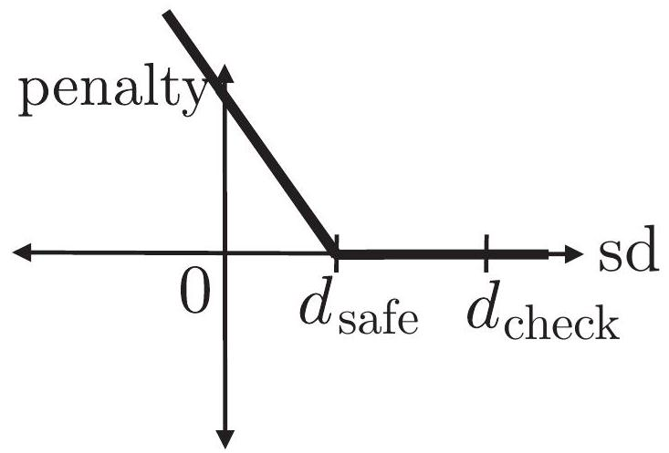
Fig. 2. Hinge penalty for collisions.
图 2. 碰撞的铰链惩罚。
This representation makes it possible to describe convex shapes implicitly without considering explicit polyhedral representations of their surfaces. We will exploit this fact to efficiently check for collisions against swept-out volumes of the robot between time steps.
这种表示方法使得我们能够隐式地描述凸形，无需考虑其表面的显式多面体表示。我们将利用这一特点，高效地检查机器人在时间步长之间扫掠体积的碰撞情况。
Two objects are non-colliding if the signed distance is positive. We will typically want to ensure that the robot has a safety margin . Thus, we want to enforce the following constraints at each timestep
若两物体之间的带符号距离为正，则它们不会发生碰撞。我们通常希望确保机器人拥有 的安全裕度。因此，我们希望在每个时间步长内强制执行以下约束条件。
where is the collection of links of the robot, and is the set of obstacles. These constraints can be relaxed to the following penalty
其中 表示机器人的链接集合， 代表障碍物集合。这些约束条件可放宽至以下 惩罚形式。
A single term of this penalty function is illustrated in Figure 2.
该惩罚函数的单项 在图 2 中进行了说明。
Note that in practice, we do not consider all pairs of objects for the collision penalty (Equation (10)) since the penalty corresponding to most pairs of faraway objects is zero. For computational efficiency, we query a collision checker for all pairs of nearby objects in the world with distance smaller than a user-defined distance between them where , and formulate the collision penalty based on these pairs.
请注意，在实际操作中，我们并未对所有物体对进行碰撞惩罚（公式（10）），因为大多数远距离物体对的惩罚值为零。为了计算效率，我们针对世界中所有距离小于用户定义的距离 （其中 ）的相邻物体对，查询碰撞检测器，并基于这些配对来制定碰撞惩罚。
We can form a linear approximation to the signed distance using the robot Jacobian and the notion of closest points. Let denote the space occupied by and in local coordinates, and let and
我们可以利用机器人雅可比矩阵和最近点概念，形成有符号距离的线性近似。设 表示局部坐标中 和 所占据的空间，并设 和
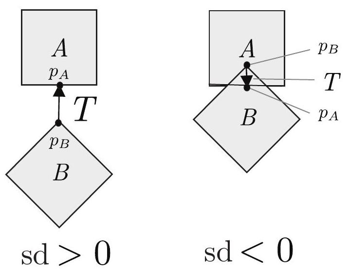
Fig. 3. Minimal translational distance and closest points.
图 3. 最小平移距离与最近点。
denote the local positions of contact points. and denote the objects' poses.
表示接触点的局部位置。 和 表示物体的姿态。
To define closest points and our derivative approximation, first note that the signed distance function is given by the following formula, which applies to both the overlapping and non-overlapping cases:
为定义最近点及我们的导数近似，首先注意到有符号距离函数由以下公式给出，该公式适用于重叠与非重叠两种情况：
The closest points and normal are defined as a triple for which the signed distance is optimum, as described in Equation (11). Equivalently, the contact normal is the direction of the minimal translation (as defined in Equations (5) and (6)), and and are a pair of points (expressed in local coordinates) that are touching when we translate by (Figure 3 ).
最近点 与法线 被定义为一组三元组，其中带符号距离达到最优，如公式(11)所述。等价地，接触法线 是极小平移 的方向（如公式(5)和(6)所定义），而 和 是一对点（以局部坐标表示），当我们按 平移 时，这两点接触（见图 3）。
Let's assume that the pose of is parameterized by the configuration vector (e.g. the robot's joint angles), and is stationary. (This calculation can be straightforwardly extended to the case where both objects vary with , which is necessary for dealing with self-collisions.) Then we can linearize the signed distance by assuming that the local positions are fixed, and that the normal is also fixed, in Equation (11).
假设 的姿态由配置向量 参数化（例如机器人的关节角度），且 保持静止。（此计算可直接扩展至两物体随 变化），这对于处理自碰撞情形是必要的。然后，我们可假设局部位置 固定，法线 亦固定，从而在线性化方程（11）中近似有符号距离。
We first linearize the signed distance with respect to the positions of the closest points:
我们首先对最近点位置的符号距离进行线性化处理：
By calculating the Jacobian of with respect to , we can linearize this signed distance expression at :
通过计算 相对于 的雅可比矩阵，我们可以在 处对该有符号距离表达式进行线性化：
The above expression allows us to form a local approximation of one collision cost term with respect to the robot's degrees of freedom. This approximation is used for every
上述表达式使我们能够针对机器人的自由度，形成一个局部近似的碰撞成本项。该近似用于每一次
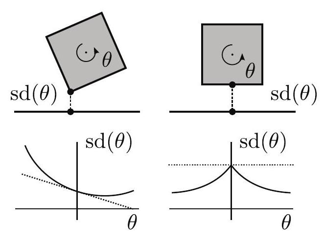
Fig. 4. Illustration of the non-differentiability of the signed distance function. Here, a square is rotated about its center by angle . The true function is shown by a solid line, and the linearization is shown by a dotted line. It is correct to first-order in non-degenerate situations, however, in degenerate situations where the signed distance is non-differentiable, it gives an erroneous gradient estimate. Empirically, the optimization works well despite this issue.
图 4. 有符号距离函数非可微性的示例。图中，一个正方形绕其中心旋转了角度 。实线表示真实函数，虚线表示线性化结果。在非退化情况下，该线性化至第一阶是准确的，然而在退化情况下，当有符号距离函数不可微时，它会导致错误的梯度估计。尽管存在这一问题，实证表明优化过程仍能有效进行。
pair of nearby objects returned by the collision checker. After we linearize the signed distance, this cost can be incorporated into a quadratic program (or linear program) using Equation (3).
碰撞检测器返回的一对邻近物体。在将符号距离线性化后，此成本可通过公式（3）纳入二次规划（或线性规划）中。
Note that Equation (13), which assumes that the normal and the closest points are fixed, is correct to first order in non-degenerate situations involving polyhedra. However, in degenerate cases involving face-face contacts, the signed distance is non-differentiable as a function of the poses of the objects, and the above formula deviates from correctness. Empirically, the optimization does not seem to get stuck at the points of non-differentiability. Figure 4 illustrates this phenomenon for two squares. An interesting avenue for future work would be to develop approximations to the the signed distance penalty that provide a better local approximation.
注意，公式（13）假设法线 及最近点固定，在涉及多面体的非退化情况下，其正确性仅限于一阶近似。然而，在涉及面与面接触的退化情形中，作为物体姿态函数的带符号距离是非微分的，上述公式便不再准确。经验表明，优化过程似乎不会卡在非微分点上。图 4 展示了两个正方形间的这一现象。未来研究的一个有趣方向是开发对带符号距离惩罚的近似方法，以提供更优的局部近似。
The preceding discussion formulates the no-collisions constraint for a discretely sampled trajectory. However, when such a trajectory is converted to a continuous-time trajectory for execution, e.g. by linear interpolation or cubic splines, the resulting continuous-time trajectory might have collisions between time steps (see Figure 5).
上述讨论为离散采样轨迹设定了无碰撞约束。然而，当此类轨迹通过线性插值或三次样条等方式转换为连续时间轨迹以执行时，所得的连续时间轨迹在时间步之间可能发生碰撞（见图 5）。
We can modify the collision penalty from Section 4.1 to give a cost that enforces the continuous-time safety of the trajectory (though it makes a geometric approximation). It is only twice as computationally expensive than the discrete-time collision cost of the previous section since it involves twice as many narrow-phase collision queries.
我们可将第 4.1 节中的碰撞惩罚加以调整，以施加一个确保轨迹连续时间安全的成本（尽管它进行了几何近似）。由于涉及的窄相位碰撞查询数量翻倍，其计算成本仅是前一节离散时间碰撞成本的两倍。
Consider a moving object and a static object , for . The motion is free of collision if the swept-out volume does not intersect . First suppose that undergoes only translation, not rotation. (We will consider
考虑一个移动物体 和一个静止物体 ，在 的情况下。若扫掠体积 不与 相交，则运动无碰撞。首先假设 仅发生平移，未发生旋转。（我们将进一步探讨
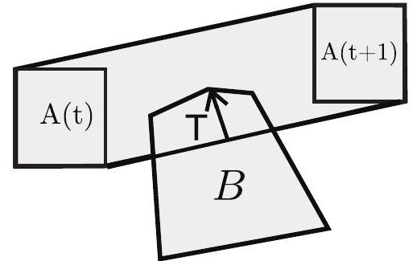
Fig. 5. Illustration of swept volume for use in our continuous collision cost.
图 5. 用于连续碰撞成本计算的扫掠体积示意图。
rotations below.) Then the swept-out volume is the convex hull of the initial and final volumes (Van den Bergen, 2001)
随后，扫掠出的体积即为初始与最终体积的凸包（Van den Bergen，2001）
Thus we can use the same sort of collision cost we described in Section 4.1, but now we calculate the signed distance between the swept-out volume of and the obstacle :
因此，我们可以采用第 4.1 节中描述的碰撞成本计算方法，但现在我们需要计算 的扫掠体积与障碍物 之间的有向距离。
We perform the necessary signed distance computation without having to calculate the convex hull of shapes , since (as noted in Section 4.1) the signed distance cost can be calculated using the support mappings. In particular, the support mapping is given by
我们无需计算形状 的凸包即可执行必要的带符号距离计算，因为（如第 4.1 节所述）带符号距离成本可通过支持映射来计算。具体而言，支持映射定义为
Calculating the gradient of the swept-volume collision cost is slightly more involved than discrete case described in Equations (12) and (13). Let's consider the case where object is moving and object is stationary, as in Figure 5 . Let's suppose that and are polyhedral. Then the closest point convhull lies in one of the faces of this polytope. convhull has three types of faces: (a) all the vertices are from , (b) all of the vertices are from , and (c) otherwise. Cases (a) and (b) occur when the deepest contact in the interval occurs at one of the endpoints, and the gradient is given by the discrete-time formula. In case (c), we have to estimate how the closest point varies as a function of the poses of at times and .
计算扫掠体积碰撞成本的梯度比方程（12）和（13）中描述的离散情况稍微复杂一些。考虑如图 5 所示的情况，其中物体 在移动，而物体 静止。假设 和 为多面体，那么最近点 位于该多面体的一个面上。多面体 的面分为三种类型：(a)所有顶点来自 ，(b)所有顶点来自 ，(c)其他情况。当区间 内的最深接触发生在端点时，出现情况(a)和(b)，此时梯度由离散时间公式给出。对于情况(c)，我们需要估计最近点如何随 在时刻 和 的位姿变化而变化。
We use an approximation for case (c) that is computationally efficient and empirically gives accurate gradient estimates. It is correct to first order in non-degenerate 2D cases, but it is not guaranteed to be accurate in 3D. Let , denote the closest points and normals between convhull , and , respectively, and let be the normal pointing from into .
对于情况(c)，我们采用了一种计算高效且经验上能提供准确梯度估计的近似方法。该方法在非退化的二维情形下至多一阶精度正确，但在三维中无法保证其准确性。设 表示凸包 与 之间最近点的集合及其法线，并设 为从 指向 的法线。
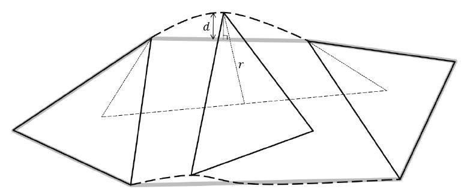
Fig. 6. Illustration of the difference between swept out shape and convex hull. The figure shows a triangle undergoing translation and uniform rotation. The swept-out area is enclosed by dotted lines, and the convex hull is shown by a thick gray line.
图 6. 扫掠形状与凸包差异示意图。图中展示了一个三角形经历平移和均匀旋转的过程。扫掠区域由虚线围成，而凸包则以粗灰线表示。
where we make the approximation
我们在此进行近似处理
The preceding discussion assumed that the shapes undergo translation only. However, the robot's links also undergo rotation, so the convex hull will underestimate the swept-out volume. This phenomenon is illustrated in Figure 6. We can calculate a simple upper-bound to the swept-out volume, based on the amount of rotation. Consider a shape undergoing translation and rotation angle around axis in local coordinates. Let and be the occupied space at the initial and final times, respectively. One can show that if we expand the convex hull convhull by , where is the maximum distance from a point on to the local rotation axis, then the swept-out volume is contained inside.
前述讨论假设形状仅经历平移。然而，机器人的连杆亦会旋转，因此凸包将低估扫掠体积。此现象在图 6 中得以阐释。我们可根据旋转量计算扫掠体积的简单上界。考虑形状 经历平移 及绕局部坐标轴 的旋转角 。设 与 分别为初始与最终时刻所占据的空间。可以证明，若我们将凸包 convhull 扩展 ，其中 为 上任一点至局部旋转轴的最大距离，则扫掠体积被包含其中。
In summary, we can ensure continuous time safety by ensuring that for each time interval
综上所述，通过确保每个时间间隔 的安全，我们可以保证连续时间的安全性
One could relax this constraint into a penalty as described in Section 4.1, by approximating . In practice, we
可将此约束放宽为第 4.1 节所述的惩罚，通过近似 实现。在实际操作中，我们
ignored the correction , since it was well under in all of the problems we considered.
忽略了修正 ，因为在我们考虑的所有问题中，它都远低于 。
The no-collisions penalty for the continuous-time trajectory safety is only twice as expensive as the discrete no-collisions penalty since we have to calculate the support mapping of a convex shape with twice as many vertices. As a result, the narrow-phase collision detection takes about twice as long. The upshot is that the continuous collision cost solves problems with thin obstacles where the discrete-time cost fails to get the trajectory out of collision. An added benefit is that we can ensure continuous-time safety while parametrizing the trajectory with a small number of time steps, reducing the computational cost of the optimization.
连续时间轨迹安全中的无碰撞惩罚仅是离散无碰撞惩罚的两倍成本，因为我们必须计算具有两倍多顶点的凸形状的支持映射。因此，狭义阶段碰撞检测所需时间大约翻倍。其结果是，连续碰撞成本解决了离散时间成本无法使轨迹避开细小障碍物的问题。额外的好处是，我们能在用少量时间步长参数化轨迹的同时确保连续时间安全，从而降低优化的计算成本。
Our evaluation is based on four test scenes included with the MoveIt! distribution-bookshelves, countertop, industrial, and tunnel scenes; and a living room scene imported from Google Sketchup. The set of planning problems was created as follows. For each scene we set up the robot in a number of diverse configurations. Each pair of configurations yields a planning problem. Our tests include 198 arm planning problems and 96 full-body problems (Figure 7). We ran all the experiments on a machine with an Intel i7 CPU, and used Gurobi as the underlying Quadratic Program solver (Gurobi, 2012). The complete source code necessary to reproduce this set of experiments or evaluate a new planner is available at https://github.com/joschu/planning_benchmark.
我们的评估基于 MoveIt!分发包中包含的四个测试场景——书架、台面、工业和隧道场景，以及从 Google SketchUp 导入的客厅场景。规划问题的设定如下：针对每个场景，我们配置了机器人的多种不同姿态，每对姿态组合产生一个规划问题。测试涵盖了 198 个机械臂规划问题和 96 个全身规划问题（图 7）。所有实验在一台搭载 Intel i7 处理器的机器上进行，并采用 Gurobi 作为底层二次规划求解器（Gurobi, 2012）。完整源码，用于复现此系列实验或评估新规划器，可于 https://github.com/joschu/planning_benchmark 获取。
We compared TrajOpt to open-source implementations of bi-directional RRT (Kuffner and LaValle, 2000) and a variant of KPIECE (Sucan and Kavraki, 2009) from OMPL/MoveIt! (Chitta et al., 2012; Cohen et al., 2012), that is part of the ROS motion planning libraries. All algorithms were run using default parameters and post-processed by the default smoother and shortcutting algorithm used by MoveIt!. We also compared TrajOpt to a recent implementation of CHOMP (Zucker et al., 2012) on the arm planning problems. We did not use CHOMP for the full-body planning problems because they were not supported in the available implementation.
我们将 TrajOpt 与 OMPL/MoveIt!中来自 ROS 运动规划库的开源实现进行了比较，包括双向 RRT（Kuffner 和 LaValle，2000 年）和 KPIECE 变体（Sucan 和 Kavraki，2009 年）。所有算法均采用默认参数运行，并由 MoveIt!默认使用的平滑器和捷径算法进行后处理。此外，我们还针对机械臂规划问题，将 TrajOpt 与 CHOMP（Zucker 等人，2012 年）的最新实现进行了对比。由于现有实现不支持，我们未将 CHOMP 应用于全身规划问题。
Initialization: We tested both our algorithm and CHOMP under two conditions: single initialization and multiple initializations. For the single initialization, we used a straight line initialization in configuration space by linearly interpolating between start and goal configurations. For multiple initializations, we used the following methodology.
初始化：我们分别在单次初始化和多次初始化两种条件下测试了我们的算法及 CHOMP 算法。对于单次初始化，我们在构形空间中通过线性插值法在起始和目标构形之间采用直线初始化。对于多次初始化，我们采用了以下方法。
Arm planning problems: Prior to performing experiments, we manually selected four waypoints in joint space. These waypoints were fixed for all scenes and problems. Let and denote the start and goal states for a planning problem. Then we used the four initializations , which linearly interpolate between and for the first time-steps, and then linearly interpolate between and for the next timesteps.
关节空间中，实验前我们手动选定了四个航点 ，这些航点对所有场景和问题固定不变。设 和 分别代表规划问题的起始与目标状态。随后，我们采用了四种初始化方式 ，在前 个时间步内线性插值于 与 之间，接着在接下来的 个时间步内线性插值于 与 之间。
Full-body planning problems: We randomly sampled the environment for base positions with the arms tucked. After finding a collision-free configuration of this sort, we initialized with the trajectory as described above. We generated up to 5 initializations this way, Note that even though we initialize with tucked arms, the optimization typically untucks the arms to improve the cost.
全身规划问题：我们随机抽样环境，以手臂内收的姿态 确定基础位置。在找到此类无碰撞配置 后，我们按上述描述初始化了轨迹 。以此方式最多生成 5 次初始化。需要注意的是，尽管初始时手臂内收，但优化过程通常会展开手臂以降低成本。
Implementation details: Our current implementation of the continuous-time collision cost does not consider selfcollisions, but we penalized self-collisions at discrete times as described in Section 4.1. For collision checking, we took the convex hull of the geometry of each link of the robot, where each link is made of one or more meshes. The termination conditions we used for the optimization were (a) a maximum of 40 iterations, (b) a minimum merit function improvement ratio of , (c) a minimum trust region size , and (d) a constant penalty scaling factor . We used the Bullet collision checker (Coumanns, 2012) for convex-convex collision queries. We used 11 timesteps for the arm and timesteps for the full-body trajectories. The sampling-based planners were limited to on full-body planning problems.
实现细节：我们当前对连续时间碰撞成本的实现并未考虑自碰撞，但在第 4.1 节所述的离散时刻对自碰撞进行了惩罚。对于碰撞检测，我们采用了机器人每个连杆几何形状的凸包，其中每个连杆由一个或多个网格构成。优化终止条件包括：(a)最多 40 次迭代，(b)最小效用函数改进比率为 ，(c)最小信任区域大小为 ，以及(d)恒定的惩罚缩放因子 。我们采用 Bullet 碰撞检测器（Coumanns, 2012）进行凸包与凸包间的碰撞查询。对于机械臂，我们使用了 个 11 时刻步，而对于全身轨迹，则使用了 个时刻步。采样基规划器在全身规划问题上限制为 。
Results: The results for arm planning are shown in Table 1 and for full-body planning are shown in Table 2. We evaluated TrajOpt and compared it with other planners in terms of (a) average computation time for all successful planning runs computed over all problems, and (b) average normalized trajectory length over all problems that is computed as the average of the trajectory lengths normalized by dividing by the shortest trajectory length for that problem across all planners (value of 1 for a planner indicates that the shortest trajectory was found by the planner for all problem instances). TrajOpt solves a higher percentage of problems on this benchmark, is computationally more efficient, and computes shorter trajectories on average. TrajOpt with multiple initializations outperformed the other approaches in both sets of problems. Multiple trajectory initializations are important to guide the optimization out of local minima and improves the success rate for both TrajOpt and CHOMP. Section 9 presents a discussion of why multiple trajectory initializations are important.
结果：手臂规划的结果展示于表 1，而全身规划的结果则列于表 2。我们对 TrajOpt 进行了评估，并与其他规划器在以下两方面进行了比较：(a) 所有成功规划运行的平均计算时间，该时间针对所有问题进行了计算；(b) 所有问题的平均归一化轨迹长度，计算方法为将各问题的轨迹长度平均后，除以该问题下所有规划器中最短的轨迹长度（某规划器的值为 1 表示该规划器为所有问题实例找到了最短轨迹）。在此基准测试中，TrajOpt 解决了更高比例的问题，计算效率更高，且平均计算出的轨迹更短。采用多重初始化的 TrajOpt 在两类问题中均优于其他方法。多重轨迹初始化对于引导优化跳出局部最小值至关重要，能提升 TrajOpt 和 CHOMP 的成功率。第 9 节将深入探讨为何多重轨迹初始化具有重要意义。
The bottom three rows of Table 1 indicate the reasons for failure of the different algorithms on the arm planning problems; the numbers indicate the fraction of problems with each failure case. The sampling-based planners (OMPL-RRTConnect and OMPL-LBKPIECE) failed when the search algorithm found a path but the subsequent path verification step found that it was in collision. This type of failure is possible because the search algorithm uses a fast collision checking method that is not perfectly accurate. In the CHOMP failures, the optimizer returned a path that was in collision or had joint limit violations. In the TrajOpt failures, the optimizer was not able to find a collision-free path after all of the initializations.
表 1 底部三行指出了不同算法在机械臂规划问题上的失败原因；数字表示每种失败情况下的问题占比。基于采样的规划器（OMPL-RRTConnect 和 OMPL-LBKPIECE）在搜索算法找到路径后，后续的路径验证步骤发现该路径存在碰撞时失败。此类失败可能发生，因为搜索算法采用了一种快速但不完全精确的碰撞检测方法。在 CHOMP 的失败案例中，优化器返回的路径存在碰撞或关节限位违规。至于 TrajOpt 的失败，优化器在所有初始化后仍未能找到无碰撞路径。
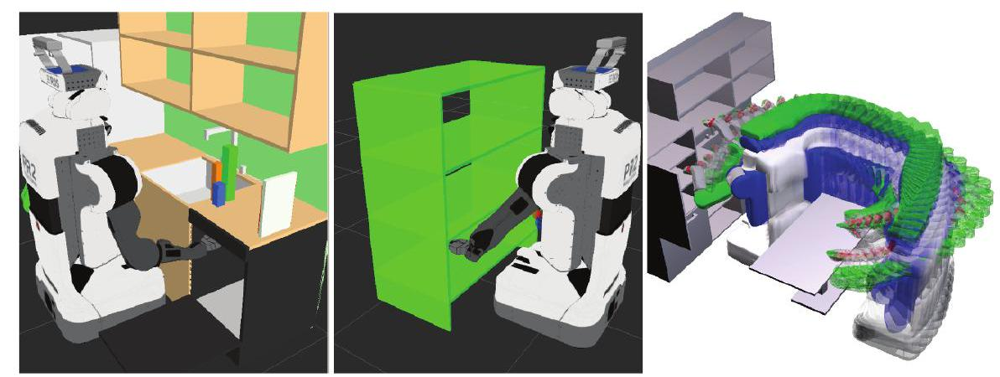
Fig. 7. Scenes in our benchmark tests. (Left and center) Two of the scenes used for the arm planning benchmark. (Right) A third scene, showing the path found by our planner on an 18-DOF full-body planning problem.
图 7. 我们的基准测试场景。（左和中）用于机械臂规划基准测试的两个场景。（右）第三个场景，展示了我们的规划器在 18 自由度全身规划问题中找到的路径。
Table 1. Results on 198 arm planning problems for a PR2, involving 7 degrees of freedom.
表 1. PR2 在涉及 7 个自由度的 198 个手臂规划问题上的结果。
| OMPL-RRTConnect | OMPL-LBKPIECE | CHOMP | CHOMP-Multi | TrajOpt | TrajOpt-Multi | |
|---|---|---|---|---|---|---|
| Success fraction 成功率 | 0.838 | 0.833 | 0.677 | 0.833 | 0.843 | 0.990 |
| Avg. time (s) 平均时间（秒） | 0.566 | 1.33 | 3.16 | 6.24 | 0.206 | 0.307 |
| Avg. norm length 平均规范长度 | 1.55 | 1.63 | 1.32 | 1.33 | 1.15 | 1.14 |
| Failure: collision 失败：碰撞 | 0.162 | 0.167 | 0.278 | 0.116 | 0.157 | 0.010 |
| Failure: joint limit 失败：关节限位 | 0 | 0 | 0.040 | 0.045 | 0 | 0 |
| Failure: other 失败：其他 | 0 | 0 | 0.005 | 0.005 | 0 | 0 |
Table 2. Results on 96 full-body planning problems for a PR2, involving 18 degrees of freedom (two arms, torso, and base).
表 2. PR2 的 96 个全身规划问题结果，涉及 18 个自由度（双臂、躯干及基座）。
| OMPL-RRTConnect | OMPL-LBKPIECE | TrajOpt | TrajOpt-multi | |
|---|---|---|---|---|
| Success fraction 成功率 | 0.41 | 0.51 | 0.73 | 0.88 |
| Avg. time (s) 平均时间（秒） | 20.3 | 18.7 | 2.2 | 6.1 |
| Avg. norm length 平均规范长度 | 1.54 | 1.51 | 1.06 | 1.05 |
One of the main challenges in porting motion planning from simulation to reality is creating a useful representation of the environment's geometry. Depending on the scenario, the geometry data might be live data from a Kinect or laser range finder, or it might be a mesh produced by an offline mapping procedure. We used our algorithm with two different representations of environment geometry: (a) convex decomposition and (b) meshes.
将运动规划从仿真转移到现实的主要挑战之一，是构建环境几何结构的有效表示。根据场景不同，几何数据可能来自 Kinect 或激光测距仪的实时数据，也可能是由离线映射过程生成的网格。我们采用算法处理了两种不同的环境几何表示：(a) 凸分解和(b) 网格。
Convex decomposition: Convex decomposition seeks to represent a general 3D volume approximately as a union of convex bodies (Lien and Amato, 2007). Hierarchical Approximate Convex Decomposition (HACD) (Mamou and Ghorbel, 2009) is a leading method for solving this problem, and it is similar to agglomerative clustering algorithms. It starts out with each triangle of a surface mesh as its own cluster, and it repeatedly merges pairs of clusters, where the choice of which clusters to merge is based on an objective function. The algorithm is terminated once a sufficiently small number of clusters is obtained. We used Khaled Mammou's implementation of HACD, which, in our experience, robustly produced good decompositions, even on the open meshes we generated from single depth images. Example code for generating meshes and convex decompositions from Kinect data, and then planning using our software package TrajOpt, is provided in a tutorial at http://rll.berkeley.edu/trajopt.
凸分解：凸分解旨在将一般的三维体积近似表示为多个凸体的并集（Lien 和 Amato，2007 年）。层次化近似凸分解（HACD）（Mamou 和 Ghorbel，2009 年）是解决此问题的领先方法，其原理类似于凝聚聚类算法。它从表面网格的每个三角形作为一个独立的聚类开始，反复合并聚类对，选择合并哪些聚类的依据是一个目标函数。算法在达到足够少的聚类数量时终止。我们采用了 Khaled Mammou 实现的 HACD，根据我们的经验，即使在从单张深度图像生成的开放网格上，该实现也能稳健地产生良好的分解效果。有关如何使用 Kinect 数据生成网格及凸分解，并利用我们的软件包 TrajOpt 进行规划的示例代码，可在 http://rll.berkeley.edu/trajopt 的教程中找到。
Meshes: Our algorithm also can be used directly with mesh data. The mesh is viewed as a soup of triangles (which are convex shapes), and we penalize collision between each triangle and the robot's links. For best performance, the mesh should first be simplified to contain as few triangles as possible while faithfully representing the geometry, e.g. see Cignoni et al. (1998).
网格数据：我们的算法同样可直接应用于网格数据。将网格视为三角形集合（三角形为凸形状），并对每个三角形与机器人连杆间的碰撞进行惩罚。为达到最佳性能，应先对网格进行简化，使其包含尽可能少的三角形，同时忠实呈现几何形状，例如参见 Cignoni 等人（1998 年）的研究。
We performed several physical experiments involving a mobile robot (PR2) to explore two aspects of TrajOpt: (a) applying it to the "dirty" geometry data that we get from depth sensors such as the Kinect, and (b) validating if the full-body trajectories can be executed in practice. Our end-to-end system handled three full-body planning problems:
我们进行了多项涉及移动机器人（PR2）的物理实验，旨在探究 TrajOpt 的两个方面：(a) 将其应用于从 Kinect 等深度传感器获取的“脏”几何数据，以及(b) 验证全身轨迹在实践中是否可行。我们的端到端系统处理了三个全身规划问题：
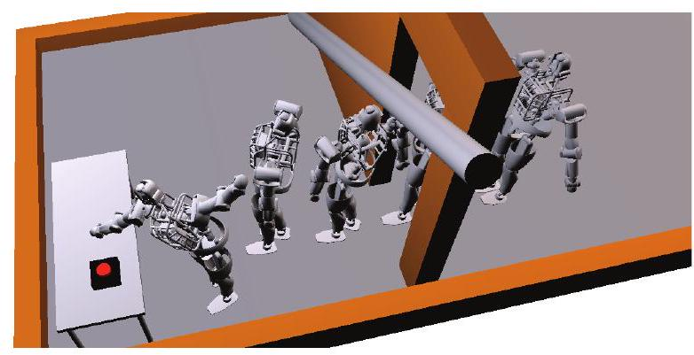
Fig. 8. The Atlas humanoid robot in simulation walking across the room while avoiding the door frame and other obstacles in the environment, and pushing a button. Each footstep was planned for separately using TrajOpt while maintaining static stability. Five time steps of the trajectory are shown.
图 8 展示了 Atlas 仿人机器人在模拟环境中穿行房间的情景，期间巧妙避开门框及其他障碍物，并成功按下按钮。每一步行走均通过 TrajOpt 独立规划，确保静态稳定性。图中展示了轨迹中的五个时间节点。
The point clouds we used were obtained by mapping out the environment using SLAM and then preprocessing the map to obtain a convex decomposition. Videos of these experiments are available at http://rll.berkeley.edu/trajopt/ijrr.
我们使用的点云数据通过 SLAM 技术对环境进行测绘，随后对地图进行预处理以获得凸分解。这些实验的视频可在 http://rll.berkeley.edu/trajopt/ijrr 查看。
We used TrajOpt to planning a statically stable walking motion for the Atlas humanoid robot model. The degrees of freedom include all 28 joints and the 6 DOF pose, where we used the axis-angle (exp map) representation for the orientation. The walking motion is divided into four phases (a) left foot planted, (b) both feet planted, (c) right foot planted, and (d) both feet planted. We impose the constraint that the center of mass constantly lies above the convex hull of the planted foot or feet, corresponding to the zero-moment point stability criterion (Vukobratovic and Borovac, 2004). The convex support polygon is now represented as an intersection of half-planes, yielding inequality constraints:
我们采用 TrajOpt 为 Atlas 类人机器人模型规划了静态稳定的行走动作。该模型的自由度涵盖了所有 28 个关节及 6 自由度姿态，其中我们采用轴角（指数映射）表示法来描述方向。行走动作被划分为四个阶段：(a)左脚着地，(b)双脚着地，(c)右脚着地，(d)双脚着地。我们施加约束条件，确保质心始终位于着地脚或双脚形成的凸包之上，这与零力矩点稳定性判据（Vukobratovic 与 Borovac，2004 年提出）相对应。现在，凸支撑多边形被表示为 个半平面的交集，从而产生 个不等式约束。
where the ground-projection of the center of mass is a nonlinear function of the robot configuration.
其中，质心 在地面上的投影是机器人构型的非线性函数。
Using this approach, we use TrajOpt to plan a sequence of steps across a room, as shown in Figure 8. Each step is planned separately using the phases described above. The optimization is initialized with a stationary trajectory that remains at the initial configuration for timesteps, where . The robot is able to satisfy these stability and footstep placement constraints while ducking under an obstacle and performing the desired task of pushing a button.
采用此方法，我们利用 TrajOpt 规划了穿越房间的一系列步骤，如图 8 所示。每个步骤均按照上述阶段独立规划。优化初始化时，轨迹保持静止，维持在初始构型 个时间步长，其中 。机器人能在俯身穿过障碍物的同时，满足稳定性和足迹放置约束，完成按下按钮的任务。
TrajOpt can readily incorporate kinematic constraints, e.g. the constraint that a redundant robot's end effector is at a certain pose at the end of the trajectory. A pose constraint can be formulated as follows. Let (3) denote the target pose of the gripper, and let be the current pose. Then gives the pose error, measured in the frame of the target pose. This pose error can be represented as the error vector:
TrajOpt 能轻松融入运动学约束，例如，要求冗余机器人的末端执行器在轨迹结束时处于特定姿态。姿态约束可表述如下：设 (3)表示夹持器的目标姿态，而 为当前姿态。则 给出以目标姿态坐标系衡量的姿态误差。此姿态误差可表示为 误差向量。
where is the translation part, and is the axis-angle representation of the rotation part obtained using the operator. We refer the reader to the appendix for additional details on the log operator.
其中 为翻译部分， 是通过 算子获得的旋转部分的轴角表示。关于对数算子的更多细节，请参阅附录。
One can also impose partial orientation constraints. For example, consider the constraint that the robot is holding a box that must remain upright. The orientation constraint is an equality constraint, namely that an error vector vanishes. Here, is a vector that is fixed in the box frame and should point upwards in the world frame.
还可施加部分方向约束。例如，考虑机器人手持必须保持直立的箱子这一约束。方向约束即为等式约束，即误差向量 消失。此处， 是在箱子坐标系中固定的向量，在世界坐标系中应指向正上方。
Figure 9 shows our algorithm planning a series of motions that pick boxes from a stack. Our algorithm typically plans each motion in .
图 9 展示了我们的算法规划从堆栈中拾取箱子的一系列动作。该算法通常在 中规划每个动作。
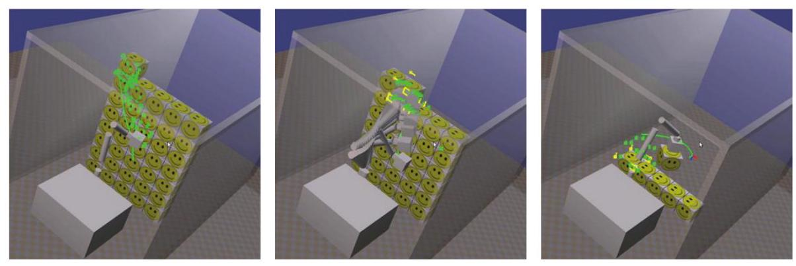
Fig. 9. Several stages of a box picking procedure, in which boxes are taken from the stack and moved to the side. The box, and hence the end effector of the robot arm, is subject to pose constraints.
图 9 展示了箱子拣选过程的几个阶段，其中箱子从堆栈中被取出并移至一旁。箱子及其所附的机器人手臂末端执行器，均受到姿态约束。
The need to plan curvature-constrained trajectories in 3D environments arises in a wide variety of domains. For instance, a new class of highly flexible, bevel-tip needles are being developed that enable the needle to move along constant curvature trajectories within tissue when a forward pushing force is applied and the direction of motion can be changed by reorienting the bevel tip through twisting of the needle at its base (Webster et al., 2006). They facilitate access to previously inaccessible clinical targets while avoiding obstacles such as sensitive anatomical tissues (e.g. vital organs and vessels) and impenetrable structures (e.g. bones), as shown in Figure 1(e). Another important application is the design of multiple bounded curvature channels in intracavitary 3D printed implants through which a radioactive source is guided for delivering radiation doses for high dose rate brachytherapy (HDR-BT) (Figure 1(f)) (Garg et al., 2013). The need for designing such channels also arises in applications such as turbine blade design for delivering coolant through the blades to cool them during operation (Han et al., 2013), and planning bounded curvature trajectories for unmanned aerial vehicles (UAVs) (Yang and Sukkarieh, 2010).
在三维环境中规划曲率受限轨迹的需求广泛出现于多个领域。例如，一类新型高灵活性斜面尖端针正在研发中，这类针能在施加向前推力时，在组织内沿恒定曲率轨迹移动，并通过在针基部扭转来重新定位斜面尖端以改变运动方向（Webster 等人，2006 年）。它们有助于触及以往难以触及的临床目标，同时避开敏感解剖组织（如重要器官和血管）及不可穿透结构（如骨骼）等障碍，如图 1(e)所示。另一重要应用是设计三维打印腔内植入物中的多个限定曲率通道，用于引导放射源进行高剂量率近距离放射治疗（HDR-BT）的辐射剂量传递（图 1(f)）（Garg 等人，2013 年）。类似需求还出现在涡轮叶片设计等应用中，旨在通过叶片输送冷却剂，以在运行期间为其降温（Han 等人）。2013 年），并为无人机（UAV）规划有限曲率轨迹（Yang 和 Sukkarieh，2010 年）。
Computing collision-free, curvature-constrained trajectories in 3D environments with obstacles is challenging because it requires planning in the configuration space consisting of the 6D pose (position and orientation). We formulate this as a constrained, non-convex trajectory optimization problem defined over manifolds such as the (3) Lie group instead of vector spaces of the form . We accomplish this by iteratively optimizing over increments to the trajectory, defined in terms of the corresponding Lie algebra ( in our case) (Saccon et al., 2013). Second, we consider the problem of planning multiple trajectories that are mutually collision-free, which arises in planning trajectories for multiple needles for medical procedures (Xu et al., 2009), multiple channels in intracavitary implants (Garg et al., 2013), or simultaneously planning for multiple UAVs (Shanmugavel et al., 2007).
在三维环境中计算无碰撞、曲率受限的轨迹颇具挑战，因需在包含 6D 位姿（位置与方向）的 配置空间内进行规划。我们将此问题表述为定义在 （3）李群等流形上的约束非凸轨迹优化问题，而非 形式的向量空间。通过迭代优化轨迹增量实现这一目标，增量以相应李代数（本例中为 ）表达（Saccon 等人，2013 年）。其次，我们考虑规划多条互不碰撞的轨迹问题，这在为医疗程序中的多根针（Xu 等人，2009 年）、腔内植入物的多个通道（Garg 等人，2013 年）或同时为多架无人机规划轨迹（Shanmugavel 等人，2007 年）时尤为突出。
Although the following formulation is specific to needle steering and channel planning, it can be easily generalized to other curvature-constrained planning problems.
尽管以下公式专为针引导和通道规划设计，但它能轻松地推广至其他受曲率限制的规划问题。
Planning a curvature-constrained shortest path in a 2D plane between two configurations for a Dubins car robot has been extensively studied (Dubins, 1957; Reeds and Shepp, 1990). Webster et al. (2006) experimentally showed that bevel-tipped steerable needles follow paths of constant curvature when inserted into tissue. Planning constant curvature trajectories for such needles in a plane has also been explored (Alterovitz et al., 2007; Bernardes et al., 2013).
在二维平面上为杜宾斯汽车机器人规划两点间曲率受限的最短路径问题已得到广泛研究（Dubins, 1957；Reeds 和 Shepp, 1990）。Webster 等人（2006）通过实验证明，当斜角尖端可转向针插入组织时，它们遵循恒定曲率的路径。针对这类针在平面内规划恒定曲率轨迹的问题也已被探讨（Alterovitz 等人，2007；Bernardes 等人，2013）。
Computing collision-free, curvature-constrained trajectories in 3D environments requires planning in the 6D configuration space consisting of both position and orientation. Existing optimal motion planning approaches that rely on discretizing the configuration space (Pivtoraiko, 2012) or sampling-based planners like RRT* (Karaman and Frazzoli, 2011) require solving a two-point boundary value problem (BVP) for connecting two states in , closedform solutions for which are not known (Belta and Kumar, 2002). Duindam et al. (2010) proposed a fast, optimal planner based on inverse kinematics, but this approach does not consider obstacle avoidance. Xu et al. used rapidly exploring random trees (RRT) (LaValle, 2006) which offers a probabilistically complete, but computationally intensive, algorithm to search for collision-free trajectories. Duindam et al. (2008) formulated planning for steerable needles as a non-convex optimization problem, which computes collision-free solutions in a few seconds but collision avoidance is treated as a cost and not as a hard constraint. Patil and Alterovitz (2010); Patil et al. (2014) proposed a RRT planner which plans bounded curvature trajectories for a needle by relying on duty-cycled spinning of the needle during insertion (Minhas et al., 2007; Majewicz et al., 2014). However, this can cause excessive tissue damage (Engh et al., 2010). This approach was also used for designing bounded curvature channels within implants (Garg et al., 2013) but the issue of optimality of channel layout was not addressed. In recent years, extensions to planning curvature-constrained trajectories in 3D have been proposed for unmanned aerial vehicles (UAVs) in environments without obstacles (Shanmugavel et al., 2007), and with obstacles (Hwangbo et al., 2007; Yang and Sukkarieh, 2010). These methods do not consider the problem of planning constant curvature trajectories in 3D.
在三维环境中计算无碰撞、曲率受限的轨迹需要规划 6D 配置空间，该空间包含位置和方向。现有的最优运动规划方法依赖于配置空间的离散化（Pivtoraiko, 2012）或如 RRT*（Karaman 和 Frazzoli, 2011）这样的采样基规划器，它们需要解决两点边界值问题（BVP）以连接两个状态，对此并无已知的闭式解（Belta 和 Kumar, 2002）。Duindam 等人（2010）提出了一种基于逆运动学的快速最优规划器，但该方法未考虑避障。Xu 等人 采用了快速探索随机树（RRT）（LaValle, 2006），这是一种概率完备但计算密集的算法，用于搜索无碰撞轨迹。Duindam 等人（2008）将可转向针的规划表述为非凸优化问题，该问题能在几秒内计算出无碰撞解决方案，但避障被视为成本而非硬约束。Patil 和 Alterovitz（2010）；Patil 等人。 (2014 年)提出了一种 RRT 规划器，通过在插入过程中依赖针的周期性旋转来规划针的有限曲率轨迹(Minhas 等人，2007 年；Majewicz 等人，2014 年)。然而，这可能导致组织损伤过度(Engh 等人，2010 年)。此方法也被用于设计植入物内的有限曲率通道(Garg 等人，2013 年)，但未解决通道布局的最优性问题。近年来，针对无障碍环境中的无人机(UAVs)提出了三维曲率约束轨迹规划的扩展(Shanmugavel 等人，2007 年)，以及有障碍环境中的规划(Hwangbo 等人，2007 年；Yang 和 Sukkarieh，2010 年)。这些方法并未考虑三维中恒定曲率轨迹规划的问题。
Prior work on trajectory optimization on Lie groups has proposed Newton-like optimization methods (Absil et al., 2009), direct (collocation) methods for trajectory optimization for continuous time optimal control problems (Saccon et al., 2013), and primitive-based motion planning (Frazzoli et al., 2005). However, these approaches do not address the issue of avoiding collisions with obstacles in the environment.
以往在李群轨迹优化方面的研究提出了类似牛顿的优化方法（Absil 等人，2009 年），针对连续时间最优控制问题的直接（配点）轨迹优化方法（Saccon 等人，2013 年），以及基于基本动作的运动规划（Frazzoli 等人，2005 年）。然而，这些方法并未解决环境中避免障碍物碰撞的问题。
We assume that a trajectory is discretized into time intervals . At each time step , a trajectory waypoint is parameterized by a pose , where is the position and is the rotation matrix that encodes the orientation of the waypoint frame relative to a world coordinate frame (Figure 10).
我们假设轨迹被离散化为时间间隔 。在每个时间步 ，轨迹航点由一个姿态 参数化，其中 表示位置， 是旋转矩阵，它编码了航点相对于世界坐标系的方位（图 10）。
The planning objective can then be stated as:
规划目标可表述为：
Input: Set of obstacles , an entry zone , a target zone , the maximum curvature , and the discretization parameter .
障碍物集合 ，入口区域 ，目标区域 ，最大曲率 ，以及离散化参数 。
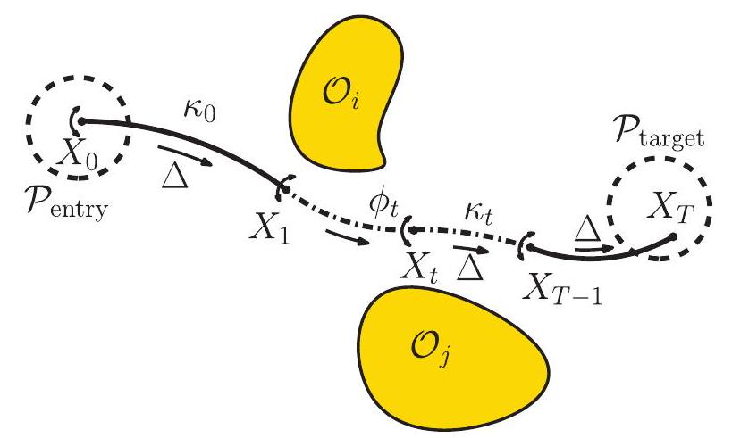
Fig. 10. A discretized curvature-constrained trajectory is parameterized as , where is the pose of the waypoint frame relative to a world coordinate frame at each time step .
图 10 展示了一条离散化的曲率约束轨迹，其参数表示为 ，其中 代表每个时间步 时路点坐标系相对于世界坐标系的姿态。
Output: Given an entry zone and a target zone , determine a locally optimal, collision-free, and curvature-constrained trajectory with and , or report that no feasible trajectory can be found.
给定一个入口区域 和一个目标区域 ，确定一条局部最优、无碰撞且曲率受限的轨迹 ，该轨迹需满足 、 和 的条件，若无法找到可行轨迹，则报告无解。
We first describe the curvature-constrained kinematic model used in this work and then formulate the planning objective as a constrained, non-convex optimization problem.
我们首先描述了本工作中使用的曲率约束运动学模型，随后将规划目标表述为一个受约束的非凸优化问题。
Curvature-constrained kinematic model: In this work, we assume that the trajectory is composed of a sequence of circular arcs, each connecting a pose to the subsequent pose and of curvature . Depending on the application, the trajectory may be required to have a constant curvature for all time steps, or a bounded curvature at each time step.
曲率约束的动态模型：本研究中，我们假设轨迹由一系列 圆弧组成，每个圆弧连接从 姿态至下一 姿态，并具有 曲率。根据应用需求，轨迹可能需在整个时间步内保持恒定曲率 ，或在每个时间步内曲率不超过 。
We make two design choices in formulating the curvature-constrained kinematics. First, we constrain the length of each circular arc to be the same for all time steps. One can just as easily have a separate length parameter for each time step. However, in our experiments, we observed that some of these values shrink to 0 as a result of the optimization, producing large gaps between time steps which is not suitable for collision checking with obstacles in the environment.
在制定曲率约束运动学时，我们做出了两项设计选择。首先，我们规定每个圆弧 的长度在所有时间步内保持一致。当然，也可以为每个时间步设定独立的 长度参数。但在我们的实验中，我们注意到这些 值在优化过程中会趋向于 0，导致时间步之间出现巨大间隙，这不利于与环境中的障碍物进行碰撞检测。
Second, we use a "stop-and-turn" strategy for the kinematics, i.e. at each time step , we apply a rotation to the pose and then propagate the frame by a distance to arrive at . This is a natural choice for needle steering, since it corresponds to first twisting the base of the needle, and then pushing it forward, which induces less damage than constantly twisting the needle tip while pushing it. This strategy also results in channels that are easier for catheters to go through. See Figure 10 for an illustration. Without loss of generality, we assume that the object (either the needle tip or a small trajectory segment for the channels) is oriented along the positive -axis. Hence, the poses at adjacent time steps and are related as:
其次，我们采用“停止并转向”的策略处理运动学，即在每个时间步 ，我们对姿态 施加旋转 ，随后通过一段距离 推进帧以达到 。这种选择对于针引导自然合理，因为它首先旋转针基，然后将其推进，相比持续旋转针尖同时推进，造成的损伤更小。此策略还使得通道更易于导管通过。图 10 提供了示意图。不失一般性，我们假设对象（无论是针尖还是通道的小轨迹段）沿正 -轴方向。因此，相邻时间步 和 的姿态关系如下：
where and are the twist vectors corresponding to the rotation and propagating the frame by distance , respectively. We refer the reader to the appendix and to the excellent treatise on the SE(3) Lie group by Murray and Shankar (1994) for details on the and operators.
其中 和 分别为对应旋转 及通过距离 传播框架的扭曲向量。关于 和 操作符的详细信息，我们建议读者参阅附录以及 Murray 和 Shankar（1994 年）关于 SE(3)李群的优秀论述。
Optimization Formulation: For notational convenience, we concatenate the states from all time steps as : and the control variables as . The planning objective is transcribed as a constrained, nonconvex trajectory optimization problem as given below:
优化公式化：为便于表示，我们将所有时间步的状态合并为 ： ，并将控制变量合并为 。规划目标被表述为一个受约束的非凸轨迹优化问题，如下所示：
subject to 须受限于
The constraints and costs are described in detail below.
约束条件与成本详述如下。
form the kinematic constraint from Equation (24) to a standard non-convex equality constraint form by using the log map and relying on the identity . We refer the reader to the appendix for more details.
利用对数映射并借助恒等式 ，将方程(24)中的运动学约束转化为标准非凸等式约束形式。更多详情，请参阅附录。
constraints to ensure that the trajectory avoids collisions, where is the signed distance between the trajectory segment in time interval and the set of obstacles . The signed distance corresponds to the minimum translation distance required to either put two geometric shapes in contact or separate them if they are overlapping. Two objects are non-colliding if the signed distance is positive, and we want to ensure that the trajectory has a user-defined safety margin . The distance between two convex shapes can be calculated by the GJK algorithm (Gilbert et al., 1988) and the penetration depth is calculated by the EPA (Van den Bergen, 2001). We approximate the segment by the convex hull of the object (the needle tip or a small segment on the channel) between time and , and we account for the approximation error in rotation by adding an error correction term . Instead of numerically computing the gradient, we linearize the signed distance using the contact normal . We include the continuoustime non-convex no-collisions constraint is included as a penalty in the optimization (Section 4.2).8.2.3. Total curvature constraint (Equation (25h)). For channel planning, we constrain the total curvature of the
为确保轨迹避免碰撞，需满足约束条件，其中 表示时间间隔 内轨迹段与障碍物集合 之间的有符号距离。该有符号距离对应于将两个几何形状置于接触状态或若它们重叠则分离它们所需的最小平移距离。若有符号距离为正，则两物体无碰撞，我们旨在确保轨迹具备用户定义的安全裕度 。两凸形之间的距离可通过 GJK 算法（Gilbert 等人，1988 年）计算，而穿透深度则由 EPA（Van den Bergen，2001 年）确定。我们通过时间 至 间物体的凸包（针尖或通道上的小段）近似该段，并通过添加误差修正项 考虑旋转中的近似误差。我们采用接触法线 线性化有符号距离，而非数值计算梯度。将连续时间非凸无碰撞约束作为优化中的 惩罚项纳入（第 4.2 节）。 总曲率约束（公式(25h)）。在频道规划中，我们限制了总曲率
trajectory to ensure that catheters carrying the radioactive source can be pushed through the channels without buckling (Garg et al., 2013).
确保携带放射源的导管能够顺利通过通道而不发生弯曲（Garg 等人，2013 年）。
8.2.4. Costs (Equation (25a)). To penalize tissue damage for needle steering and to optimize channel lengths for minimum radiation exposure, the objective imposes costs on the total length of the trajectory and the twists at each time step:
8.2.4. 成本（公式（25a））。为惩罚针引导造成的组织损伤，并优化通道长度以实现最小辐射暴露，目标对轨迹总长度及每一步骤的扭转施加成本：
For needle steering, we add an extra term to favor large minimum clearance from obstacles to deal with expected needle deflections during execution:
对于针头导向，我们增加了一个额外项，以偏好与障碍物保持较大最小间隙，从而应对执行过程中预期的针头偏移
Instead of directly including the non-convex cost term Cost in the objective, we include an auxiliary variable in the optimization and reformulate the cost as
我们并未直接将非凸代价项 Cost 纳入目标函数，而是在优化中引入辅助变量 ，并重新表述该代价项为
The objective (25a) is a weighted sum of the costs above, where are user-defined, non-negative coefficients to leverage different costs. A relatively large , for instance, may result in trajectory with larger clearance from obstacles, at the expense of a longer trajectory.
目标（25a）是上述成本的加权和，其中 为用户定义的非负系数，用于权衡不同成本。例如，较大的 可能导致轨迹与障碍物保持更大距离，但代价是轨迹更长。
The optimization problem outlined in Equation (25) is, however, described directly over the set of poses . One could use a global parameterization of the rotation group, such as axis-angle coordinates or Euler angles. The drawback of those parameterizations is that they distort the geometry-e.g. consider how a map of the world is distorted around the poles. This distortion can severely slow down an optimization algorithm, by reducing the neighborhood where local (first- and second-order) approximations are good.
然而，方程（25）中概述的优化问题直接在姿态集合 上进行描述。可以采用旋转群的全局参数化方法，如轴角坐标或欧拉角。这些参数化的缺点在于它们扭曲了几何结构——例如，考虑世界地图在极点附近的扭曲情况。这种扭曲会严重减缓优化算法的速度，因为它缩小了局部（一阶和二阶）近似有效的邻域范围。
In this work, we generalize sequential convex optimization to the case where the domain is a differentiable manifold such as the (3) Lie group rather than by considering a local coordinate parameterization of the manifold (Saccon et al., 2013). This parameterization is given by the Lie algebra , which is defined as the tangent vector space at the identity of . We refer the reader to the appendix for additional details.
在本研究中，我们将序列凸优化推广至域为可微流形的情况，例如 (3)李群，而非 ，方法是考虑流形局部坐标参数化（Saccon 等人，2013 年）。此参数化由李代数 给出，定义为 单位元处的切向量空间。更多细节请参阅附录。
In this work, we construct and solve each convex subproblem in terms of the increments to the previous solution. At the th iteration of SQP, let be the sequence of incremental twists (step) computed by solving the convex subproblem. Given a trajectory consisting of a sequence of nominal poses , the subsequent sequence of poses is obtained by applying as .
在本项工作中，我们构建并求解了每个凸子问题，以先前解决方案的增量为基准。在 SQP 的第 次迭代中，设 为由解决凸子问题计算出的增量扭转序列（步长）。给定由一系列名义位姿 组成的轨迹，通过将 应用为 ，即可获得后续的位姿序列。
Convexification: For trajectory optimization problems, there are two ways to construct locally convex approximations of the costs and constraints for setting up the convex subproblem. One can either convexify the costs and constraints directly around the current solution , which might correspond to an infeasible trajectory that does not satisfy the kinematic constraints (Equation (24)). Alternatively, we can forward integrate the computed controls and then construct the convex approximation around the integrated trajectory, which is guaranteed to satisfy all kinematic constraints, but the trajectory might violate the constraints on the entry zone and target zone. It is easier to satisfy constraints on the start and target zones without forward integration but the differential curvature constraint is difficult to satisfy. We present a detailed comparison of these two methods below.
凸化处理：在轨迹优化问题中，构建成本和约束的局部凸近似以设置凸子问题有两种方法。一种是在当前解 周围直接对成本和约束进行凸化，这可能对应于不满足运动学约束（方程（24））的不可行轨迹。另一种则是先对计算出的控制量进行前向积分，然后在积分轨迹周围构建凸近似，这样能确保满足所有运动学约束，但轨迹可能违反进入区和目标区的约束。不进行前向积分时，更容易满足起始和目标区域的约束，但差异曲率约束难以满足。下文将详细比较这两种方法。
Multi-trajectory optimization: In this work, we also consider the problem of computing multiple curvatureconstrained trajectories that are mutually collision-free. The complexity of solving trajectories simultaneously while avoiding collisions between trajectories increases rapidly as a function of . Although the size of the optimization vector grows linearly, the number of collision constraints between trajectories grows quadratically in . In addition, the chances of getting stuck in an infeasible local optima becomes much higher as increases. A natural extension is to solve for each trajectory sequentially in a predefined order while avoiding collisions with previously computed trajectories. However this approach may result in conflicts where trajectories that are computed first may collide with the target zone of trajectories that need to be solved for later.
多轨迹优化：本工作中，我们还考虑了计算多个互不碰撞的曲率约束轨迹的问题。随着 个轨迹同时求解并避免轨迹间碰撞的复杂性迅速增加，其难度与 呈函数关系增长。尽管优化向量的大小呈线性增长，但轨迹间碰撞约束的数量在 中呈二次方增长。此外，随着 的增加，陷入不可行局部最优解的概率显著提高。一个自然的扩展是按预定义顺序依次求解每个轨迹，同时避免与先前计算的轨迹发生碰撞。然而，这种方法可能导致冲突，即先计算的轨迹可能与后续需计算轨迹的目标区域发生碰撞。
Instead, we repeatedly compute each trajectory individually, where the optimization is initialized by a perturbed version of the previous solution. The previously computed trajectories are added as static obstacles to the environment since the objective is to compute trajectories that are mutually collision-free. Randomly perturbing the solution from previous optimization runs also has the desirable side effect of perturbing the optimization to potentially finding better local optima.
相反，我们反复单独计算每条轨迹，其中优化过程由先前解决方案的扰动版本初始化。之前计算的轨迹作为静态障碍物添加到环境中，因为目标是计算相互无碰撞的轨迹。随机扰动先前优化运行的解决方案还具有一个有益的副作用，即可能扰动优化过程以找到更好的局部最优解。
We experimentally evaluated our approach in two realworld applications involving medical needle steering and designing channel layouts for intracavitary brachytherapy. We implemented our algorithm in C++ and ran all the experiments on a machine with a Intel i7 CPU and used Gurobi as the underlying Quadratic Program solver.
我们通过两个涉及医疗针导引和腔内近距离放射治疗通道布局设计的实际应用，对我们的方法进行了实验评估。我们采用 C++实现了算法，并在配备 Intel i7 处理器的机器上运行了所有实验，底层二次规划求解器采用 Gurobi。
Medical needle steering: We used an anatomical model of the human male pelvic region to simulate needle insertion in tissue for delivering radioactive doses to targets
医疗针导引技术：我们采用男性骨盆区域解剖模型，模拟组织内针刺过程，以向目标区域输送放射剂量
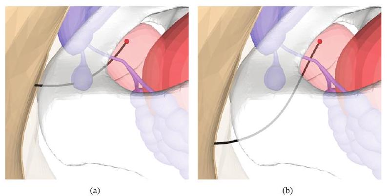
Fig. 11. Changing the value of the parameter influences the clearance of the trajectory from obstacles in the environment. Zoomed in view of the male prostate region (target inside prostate shown in red). (a) Smaller clearance from obstacles (Cowper's glands) with resulting in a potentially unsafe trajectory. (b) Larger clearance from obstacles with .
图 11. 调整参数 的值会影响轨迹在环境中与障碍物的间隙。放大显示男性前列腺区域（红色显示前列腺内的目标）。(a) 较小的障碍物间隙（考珀腺）与 导致潜在不安全轨迹。(b) 较大的障碍物间隙与 。
within the prostate. We considered randomly sampled targets within the prostate for our experiments. We set the entry zone to be a region on the perineum (skin) through which needles are typically inserted for needle-based prostate procedures. The target zones were modeled as spheres around the target points with radius , within the range of average placement errors encountered during procedures performed by experienced clinicians (Taschereau et al., 2000). The average distance between the entry zone and the target zone is and and we set . We used time steps for our experiments, such that the step length was roughly . For the objective function, we used , and we compared the planned trajectory with different choices of the clearance coefficient .
在前列腺内部，我们为实验随机选取了目标点。设定穿刺区为会阴（皮肤）上的 区域，这是进行前列腺穿刺手术时常用的针头插入点。目标区域以目标点为中心，建模为半径 的球体，其范围涵盖了经验丰富的临床医生在手术中遇到的平均定位误差 （Taschereau 等，2000 年）。穿刺区与目标区之间的平均距离为 ，并设定 。实验中采用 个时间步长，使得步长大约为 。对于目标函数，我们采用了 ，并将规划的穿刺轨迹与不同清除系数 的选择进行了比较。
We compared the effect forward integration on the entire trajectory for constructing the underlying convex subproblems. We also compared the performance of our optimization-based approach with a sampling-based RRT planner (Xu et al., 2008) for computing constant curvature trajectories for the needle. The planner was modified to plan backwards starting from target zones because it is easier to compute feasible constant curvature trajectories.
我们对比了前向整合对整个轨迹构建基础凸子问题的影响。同时，我们还比较了基于优化的方法与采样型 RRT 规划器（Xu 等人，2008 年）在计算针头恒定曲率轨迹方面的性能。该规划器经过修改，从目标区域开始反向规划，因为这样更容易计算出可行的恒定曲率轨迹。
Planning for a single needle: We first analyzed the planned trajectory for single needle insertion using 400 sampled points in the prostate. In addition to the setup above, we require that the needle insertion axis is at a deviation of at most from the horizontal, which is a restriction usually imposed by needle steering hardware that constrains the needle to be horizontal. We do not constrain the orientation of the needle tip at the target. We enforced a safety distance between the trajectory and obstacles. The error correction term for rotations (Section 4.2) is computed to be , which is ignored considering the scale of the environment we are planning in (of the order of ). We compared the planned trajectory with or , examples of which are shown in Figures 11(a) and 11(b). Using a larger clearance coefficient results in trajectories farther away from obstacles, at the expense of slightly longer paths.
单针规划：我们首先通过在前列腺内采样 400 个点，分析了单针插入的预定轨迹。除了上述设置，我们还要求针插入轴与水平面的最大偏差不超过 ，这一限制通常由限制针水平移动的针引导硬件施加。我们不对针尖在目标点的方向加以约束。我们确保轨迹与障碍物之间保持 的安全距离。旋转误差修正项（第 4.2 节）计算得出为 ，考虑到我们规划环境的大小级数为 ，该项被忽略。我们将规划的轨迹与 或 进行比较，其示例分别展示在图 11(a)和 11(b)中。采用更大的间隙系数会导致轨迹远离障碍物，但路径会略微加长。
For each task, we repeatedly ran the optimization initialized by a perturbed solution of the previous run, and we allowed up to five reruns. We evaluated the performance of no forward integration versus forward integration in terms of the average running time, percentage of solved problems, and quality metrics for the converged solutions. From the statistics listed in Table 3, we can see that forward integration outperforms no forward integration in terms of percentage of solved problems and running times. It is worth noting that the optimization solves a larger percentage of problems with as compared to using because in the latter case, the optimization finds it difficult to simultaneously satisfy both the kinematics constraint (Equation (25c)) and the collision avoidance constraint (Equation (25e)) when the trajectory is closer to obstacles and has less free space in the environment for improvement.
对于每个任务，我们反复运行优化，初始化采用前一次运行扰动后的解，并允许最多五次重试。我们评估了无前向积分与前向积分在平均运行时间、问题解决百分比及收敛解质量指标方面的性能。从表 3 列出的统计数据可见，前向积分在问题解决百分比和运行时间上均优于无前向积分。值得注意的是，优化在使用 时解决问题百分比较高，相较于使用 ，后者在轨迹靠近障碍物且环境中改进空间较少时，优化难以同时满足运动学约束（方程(25c)）和避障约束（方程(25e)）。
Our approach outperforms the RRT planner in terms of the number of problems solved. Here, the RRT planner was allotted to find a solution, pending which it reported that a solution could not be found. The trajectories computed using the RRT planner also have a very high twist cost, which is a result of the randomized nature of the planning algorithm. Since the twist cost is directly correlated with tissue damage, the trajectories computed using our approach are preferable over those computed by a randomized planner.
我们的方法在解决问题数量上超越了 RRT 规划器。在此，RRT 规划器被分配了 时间来寻找解决方案，若未果则报告无法找到解决方案。RRT 规划器计算出的轨迹因其随机性规划算法而具有极高的扭曲成本。由于扭曲成本与组织损伤直接相关，因此我们方法计算出的轨迹相比随机规划器生成的轨迹更为可取。
Planning for multiple needles: We analyzed the performance of our algorithm planning for five needle trajectories using 1000 sampled points within the prostate (200 trials). We compared the result of no forward integration vs forward integration, applying our proposed multi-trajectory planning algorithm. Using forward integration offers an advantage over not using it in terms of computational time required to compute a feasible solution and the quality of trajectories computed. Figure 1(e) shows planned trajectories for a single trial. Table 4 summarizes our result, which shows the advantage of our proposed approach. Our approach outperforms the RRT planner in terms of the number of problems solved. The trajectories computed using the RRT planner have a very high twist cost, which is also undesirable. We also tested planning for multiple trajectories simultaneously, but the running time was too long and the algorithm failed to find a solution for three needles or more.
多针规划分析：我们针对前列腺内 1000 个采样点，进行了 200 次试验，评估了五条针轨迹的算法规划性能。对比了有无前向积分的结果，应用了我们提出的多轨迹规划算法。采用前向积分在计算可行解所需时间和轨迹计算质量上均优于不使用前向积分。图 1(e)展示了一次试验的规划轨迹。表 4 总结了我们的结果，凸显了我们方法的优势。相较于 RRT 规划器，我们的方法在解决问题数量上表现更佳，RRT 规划器生成的轨迹扭转成本极高，亦不理想。我们还尝试了同时规划多条轨迹，但运行时间过长，且对于三根或更多针的情况下算法未能找到解决方案。
Channel layout design: We set up a simplified scene for designing the channel layout. We consider a scenario where a 3D printed implant is prepared for treatment of OB/GYN tumors (both vaginal and cervical), as shown in Figure 1(f).
通道布局设计：我们搭建了一个简化的场景用于设计通道布局。考虑一个情境，即准备一个 3D 打印植入物用于治疗妇产科肿瘤（包括阴道和宫颈肿瘤），如图 1(f)所示。
The implant was modeled as a cylinder of height and radius , with a hemisphere on top with radius . The dimensions of the implant was designed based on dimensions reported by Garg et al. (2013). We placed three tumors and picked eight (oriented) target poses inside
该植入体被设计为高度 、半径 的圆柱体，顶部带有半径为 的半球形结构。植入体的尺寸依据 Garg 等人(2013)报告的尺寸进行设计。我们在其中放置了三个肿瘤，并选取了八个（定向的）目标姿态。
Table 3. Single needle planning: Sampling-based RRT planner versus TrajOpt.
表 3. 单针规划：基于采样的 RRT 规划器对比 TrajOpt。
| RRT | TrajOpt | ||||
|---|---|---|---|---|---|
| No forward 禁止转发 integration 整合 |
Forward 前言 integration 整合 |
No forward 禁止转发 integration 整合 |
Forward 前言 integration 整合 |
||
| Success fraction 成功率 | 0.67 | 0.76 | 0.80 | 0.79 | 0.89 |
| Time (s) 时间（秒） | |||||
| Path length: cm 路径长度：厘米 | |||||
| Twist cost: radians 扭转成本：弧度 | |||||
| Clearance: cm 净空高度：厘米 |
Table 4. Multiple needle planning: Sampling-based RRT planner versus TrajOpt.
表 4. 多针规划：基于采样的 RRT 规划器对比 TrajOpt。
| RRT | TrajOpt | ||
|---|---|---|---|
| No forward 禁止转发 integration 整合 |
Forward 前言 integration 整合 |
||
| Success fraction 成功率 | 0.48 | 0.75 | 0.79 |
| time (s) 时间（秒） | |||
| Path length: cm 路径长度：厘米 | |||
| Twist cost: radians 扭转成本：弧度 | |||
| Clearance: cm 净空高度：厘米 |
the implant. We set the entry region to be the base of the implant, with a deviation angle at most to the perpendicular direction. We require that the curvature along the path is at most and that the total curvature on the trajectory (Equation (25h)) is at most 1.57 . This constraint is important to ensure that catheters carrying the radioactive seed can be pushed through the channels. Instead of planning forward from the entry to the target, we planned backwards from the target to the entry zone using collocation with backward integration, since the entry constraint is much easier to satisfy than the target constraint. Figure 1(f) shows a channel layout computed using our method.
植入体。我们将入口区域设定为植入体的基部，其偏差角至多偏离垂直方向 度。要求沿路径的曲率不超过 ，且轨迹上的总曲率（公式(25h)）不超过 1.57。此约束至关重要，确保携带放射性种子的导管能顺利通过通道。不同于从入口向目标正向规划，我们采用逆向从目标向入口区规划，结合逆向积分进行配位，因为入口约束比目标约束更易满足。图 1(f)展示了使用我们方法计算出的通道布局。
We compared the performance of our approach with a highly optimized RRT-based planner (Garg et al., 2013) proposed for this specific application (Table 5). Both the RRT-based approach and our approach have a randomization aspect associated with them-while the RRT uses random sampling, our multi-trajectory planning procedure uses random perturbations to initialize the optimization. We solved the same problem 100 times to investigate the randomized aspect of both approaches. Our approach is able to compute a feasible solution in almost all cases, whereas the RRT algorithm fails more often to find a feasible solution. The RRT planner also computed plans that have a higher cumulative path length and twist cost as compared to the solution computed using our approach, which is undesirable.
我们将所提方法的性能与针对此特定应用高度优化的 RRT 基规划器（Garg 等人，2013）进行了比较（见表 5）。RRT 基方法与我们的方法均涉及随机性——RRT 采用随机采样，而我们的多轨迹规划过程则利用随机扰动来初始化优化。为探究两种方法的随机性，我们针对同一问题进行了 100 次求解。我们的方法几乎总能计算出可行解，相比之下，RRT 算法找到可行解的失败次数更多。此外，RRT 规划器生成的路径在累积路径长度和扭曲成本上均高于我们方法所得解，这一结果并不理想。
Table 5. Channel layout planning: Sampling-based RRT planner versus TrajOpt.
表 5. 通道布局规划：基于采样的 RRT 规划器对比 TrajOpt。
| Success fraction 成功率 | 0.74 | 0.98 |
|---|---|---|
| Time (s) 时间（秒） | ||
| Path length: cm 路径长度：厘米 | ||
| Twist cost: radians 扭转成本：弧度 |
In this section, we compare our approach vis-à-vis CHOMP (Ratliff et al., 2009; Zucker et al., 2012) and sampling-based motion planners (LaValle, 2006), and discuss the importance of trajectory initialization for trajectory optimization methods.
在本节中，我们将我们的方法与 CHOMP（Ratliff 等人，2009 年；Zucker 等人，2012 年）及基于采样的运动规划器（LaValle，2006 年）进行对比，并探讨轨迹初始化对于轨迹优化方法的重要性。
Our approach uses optimization in the same spirit as CHOMP, with the following key differences: (a) the numerical optimization method used, and (b) the method of checking for collisions and penalizing them.
我们的方法秉承与 CHOMP 相同的优化精神，但存在以下关键差异：(a) 所采用的数值优化方法，以及(b) 检查和惩罚碰撞的方法。
a. Distance fields versus convex-convex collision checking: CHOMP uses the Euclidean distance transform-a precomputed function on a voxel grid that specifies the distance to the nearest obstacle, or the distance out of an obstacle. Typically each link of the robot is approximated as a union of spheres, since the distance between a sphere and an obstacle can be bounded based on the distance field. The advantage of distance fields is that checking a link for collision against the environment requires constant time and does not depend on the complexity of the environment. On the other hand, spheres and distance fields are arguably not very well suited to situations where one needs to accurately model geometry, which is why collision-detection methods based on meshes and convex primitives are more prevalent in applications like real-time physics simulation (Coumanns, 2012) for speed and accuracy. Whereas convex-convex collision detection takes two colliding shapes and computes the minimal translation to get them out of collision, the distance field (and its gradient) merely computes how to get each robot point (or sphere)
距离场与凸-凸碰撞检测对比：CHOMP 采用欧几里得距离变换——一种预先计算在体素网格上的函数，用于指定到最近障碍物的距离，或从障碍物中脱离的距离。通常，机器人的每个连杆被近似为若干球体的联合，因为球体与障碍物之间的距离可以根据距离场来界定。距离场的优势在于，检查连杆与环境的碰撞仅需恒定时间，且不依赖于环境的复杂性。然而，球体和距离场在需要精确建模几何形状的情况下可能并不十分适用，这解释了为何基于网格和凸基本体的碰撞检测方法在实时物理模拟等应用中更为普遍（Coumanns, 2012），以追求速度与精度。相比之下，凸-凸碰撞检测处理两个碰撞形状，并计算使其脱离碰撞的最小平移量，而距离场（及其梯度）仅计算如何使每个机器人点（或球体）达到无碰撞状态。
out of collision; however, two points may disagree on which way to go. Thus convex-convex collision detection arguably provides a better local approximation of configuration space, allowing us to formulate a better shaped objective.
尽管避免了碰撞，但两个点可能在选择方向上存在分歧。因此，凸-凸碰撞检测在某种程度上提供了对配置空间更佳的局部近似，使我们能够构建一个形状更优的目标函数。
The CHOMP objective is designed to be invariant to reparametrization of the trajectory. This invariance property makes the objective better shaped, helping the gradient pull the trajectory out of an obstacle instead of encouraging it to jump through the obstacle faster. Our method of collision checking against the swept-out robot shape achieves this result in a completely different way.
CHOMP 目标设计为对轨迹重参数化不变，这种不变性使得目标形状更优，有助于梯度引导轨迹绕开障碍而非加速穿越。我们通过与机器人扫掠形状进行碰撞检测的方法，以截然不同的方式实现了这一效果。
b. Projected gradient descent versus SQP: CHOMP uses (preconditioned) projected gradient descent, i.e. it takes steps , whereas our method uses sequential quadratic programming (SQP), which constructs a locally quadratic approximation of the objective and locally linearizes constraints. Taking a projected gradient step is cheaper than solving a QP. However, an advantage of sequential quadratic programming is that it can handle infeasible initializations and other constraints on the motion using penalties and merit functions, as described in Section 3. We note that popular non-convex optimization solvers such as KNITRO and SNOPT also use an SQP variant. Another advantage of using SQP is that there is additional flexibility in adding other cost terms to the objective and constraints, which allows TrajOpt to tackle a larger range of planning problems, including planning for underactuated, non-holonomic systems.
CHOMP 采用（预条件）投影梯度下降，即采取步骤 ，而我们的方法运用序列二次规划（SQP），构建目标函数的局部二次近似及约束的局部线性化。执行投影梯度步比求解二次规划问题成本更低。然而，序列二次规划的优势在于能处理不可行初始化及其他运动约束，通过惩罚和效用函数实现，如第 3 节所述。我们注意到，流行的非凸优化求解器如 KNITRO 和 SNOPT 也采用 SQP 变体。使用 SQP 的另一优点是，在目标函数和约束中添加其他成本项更为灵活，这使得 TrajOpt 能应对更广泛的规划问题，包括欠驱动、非完整系统的规划。
It is important to note that our approach is not a replacement for sampling-based motion planning methods such as RRTs (LaValle, 2006). It is not expected to find solutions to difficult planning problems (e.g. bug trap or maze path finding) and is not guaranteed to find a solution if one exists, i.e. it does not offer probabilistic completeness guarantees. However, our experiments indicate that our approach can still efficiently compute locally optimal, collision-free trajectories from scratch using infeasible trajectory initializations as opposed to smoothing a previously computed collision-free trajectory. In contrast to other trajectory smoothing methods, our approach does not necessarily require a collision-free trajectory initialization to begin with.
值得注意的是，我们的方法并非旨在取代如 RRTs（LaValle, 2006）等采样型运动规划技术。它并不预期能解决诸如陷阱或迷宫路径寻找等复杂规划问题，也无法保证在存在解决方案的情况下必定找到，即不提供概率完备性保证。然而，我们的实验表明，尽管以不可行轨迹作为初始化，我们的方法仍能高效地从头计算出局部最优且无碰撞的轨迹，这与对先前计算的无碰撞轨迹进行平滑处理的方法不同。与其他轨迹平滑技术相比，我们的方法并不一定需要以无碰撞轨迹作为初始条件。
Trajectory optimization for motion planning is a challenging non-convex constrained optimization problem. Given an initial trajectory that may contain collisions and violate constraints, trajectory optimization methods such as TrajOpt and CHOMP can often quickly converge to a highquality, locally optimal solution. However, these methods
运动规划中的轨迹优化是一个具有挑战性的非凸约束优化问题。给定一个可能包含碰撞并违反约束的初始轨迹，诸如 TrajOpt 和 CHOMP 等轨迹优化方法通常能迅速收敛至高质量的局部最优解。然而，这些方法
(a)
(b)
(c)
(d)
suffer from a critical limitation: their performance heavily depends on the provided trajectory initialization and they are not guaranteed to find a collision-free solution as the no-collisions constraints in the optimization are non-convex.
面临一个关键限制：其性能严重依赖于提供的轨迹初始化，并且不能保证找到无碰撞解决方案，因为优化中的无碰撞约束是非凸的。
For instance, certain initializations passing through obstacles in unfavorable ways may get stuck in infeasible solutions and cannot resolve all the collisions in the final outcome, as illustrated in Figure 12. Figure 13 shows some scenarios illustrating how trajectory optimization tends to get stuck in local optima that are not collision-free. It is important whether the signed distance normal is consistent between adjacent links or adjacent waypoints in an initial trajectory, else a bad initialization tends to have adjacent waypoints which push the optimization in opposing directions. As a consequence, these methods typically require multiple initializations. This explains why the use of multiple trajectory initializations performs better for challenging planning problems (Tables 1 and 2 ).
例如，某些初始化方式在不利条件下穿越障碍物时，可能会陷入不可行解中，无法在最终结果中解决所有碰撞问题，如图 12 所示。图 13 展示了一些情景，说明轨迹优化如何容易陷入并非无碰撞的局部最优解。初始轨迹中相邻链接或相邻航点之间的有符号距离法向量是否一致至关重要，否则不良的初始化往往会导致相邻航点将优化推向相反方向。因此，这些方法通常需要多次初始化。这解释了为何在面对复杂规划问题时，采用多重轨迹初始化的方法表现更佳（见表 1 和表 2）。
Sampling-based motion planning methods such as RRTs or PRMs could be used to compute a feasible initialization that could be used to seed our optimization approach. This could potentially improve the success rate of our approach at the cost of additional computation.
基于采样的运动规划方法，如 RRTs 或 PRMs，可用于计算可行的初始化方案，以此为我们的优化方法提供种子。这可能会以增加计算量为代价，提高我们方法的成功率。
All of our source code is available as a BSD-licensed open-source package called TrajOpt that is freely available at http://rll.berkeley.edu/trajopt. Optimization problems can be constructed and solved using the underlying C++ API or through Python bindings. Trajectory optimization problems
我们的源代码以 BSD 许可的开源包形式提供，名为 TrajOpt，可自由访问 http://rll.berkeley.edu/trajopt 获取。优化问题可通过底层 C++ API 或 Python 绑定构建和求解。轨迹优化问题
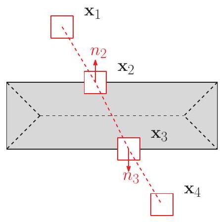
(a)
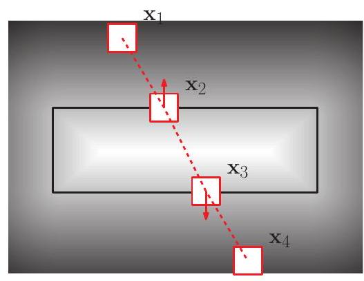
(b)
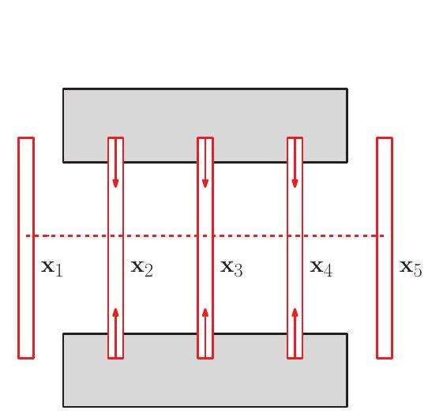
(c)
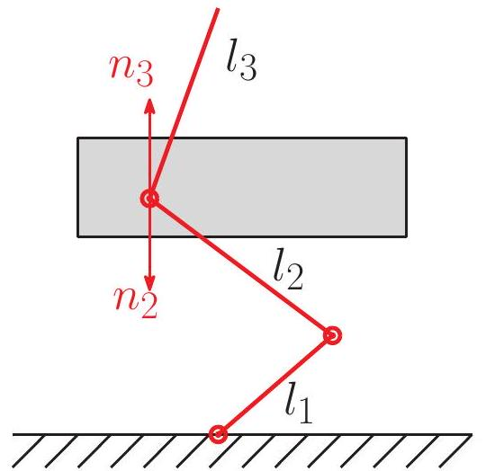
(d)
Fig. 13. Illustration of typical reasons for trajectory optimization to get stuck in local optima that are not collision-free. (a) The gradient based on penetration depth may push waypoints in in-consistent directions. (b) The gradient based on distance fields has the same problem. (c) When a robot collides simultaneously with multiple obstacles, the robot may get stuck in an infeasible local optimum as different obstacles push the robot in different directions. (d) For a robot with multiple links, the gradient may result in inconsistent directions for different links. in these figures denote configurations at different time steps along the trajectory.
图 13. 轨迹优化陷入非无碰撞局部最优的典型原因示意图。(a) 基于穿透深度的梯度可能导致航点朝不一致方向推进。(b) 基于距离场的梯度同样存在此问题。(c) 当机器人同时与多个障碍物碰撞时，由于不同障碍物对机器人施加不同方向的推力，机器人可能陷入不可行的局部最优状态。(d) 对于多连杆机器人，梯度可能导致不同连杆朝向不一致的方向。图中 表示轨迹上不同时间步的配置。
can be specified in JSON string that specifies the costs, constraints, degrees of freedom, and number of timesteps. We are also working on a MoveIt plugin (Chitta et al., 2012) so our software can be used along with ROS tools.
可在 JSON 字符串中指定成本、约束、自由度及时间步数。我们还在开发一个 MoveIt 插件（Chitta 等人，2012 年），以便我们的软件能与 ROS 工具协同使用。
For robot and environment representation, we use OpenRAVE, and for collision checking we use Bullet, because of the high-performance GJK-EPA implementation and collision detection pipeline. Two different backends can be used for solving the convex subproblems: (a) Gurobi, a commercial solver, which is free for academic use (Gurobi, 2012); and (b) BPMPD (Mészáros, 1999), a free solver included in our software distribution.
在机器人与环境表示方面，我们采用 OpenRAVE，而碰撞检测则依赖于 Bullet，因其高性能的 GJK-EPA 实现及碰撞检测流程。解决凸子问题可选用两种不同后端：(a) Gurobi，一款商业求解器，学术使用免费（Gurobi, 2012）；(b) BPMPD（Mészáros, 1999），一款包含在我们软件分发中的免费求解器。
The benchmark results presented in this paper can be reproduced by running scripts provided at http://rll.berkeley.edu/trajopt/ijrr. Various examples, including humanoid walking, arm planning with orientation constraints, and curvature-constrained trajectory planning for medical needle steering and designing channel layouts, are included with our software distribution.
本文中展示的基准测试结果可通过运行位于 http://rll.berkeley.edu/trajopt/ijrr 的脚本来重现。我们的软件分发包中包含了多种示例，包括人形机器人行走、带有方向约束的机械臂规划，以及医疗针导引的曲率约束轨迹规划和通道布局设计。
We presented TrajOpt, a trajectory optimization approach for solving robot motion planning problems. At the core of our approach is the use of sequential convex optimization with penalty terms for satisfying constraints, an efficient formulation of the no-collision constraint in terms of the signed distance, which can be computed efficiently for convex objects, and the use of support mapping representation to efficiently formulate the continuous-time no-collision constraints.
我们提出了 TrajOpt，一种用于解决机器人运动规划问题的轨迹优化方法。该方法的核心在于采用序列凸优化，并结合 惩罚项以满足约束条件，以及通过有符号距离高效表达无碰撞约束，该距离可高效计算凸对象，同时利用支撑映射表示来有效构建连续时间无碰撞约束。
We benchmarked TrajOpt against sampling-based planners from OMPL and CHOMP. Our experiments indicate that TrajOpt offers considerable promise for solving a wide variety of high-dimensional motion planning problems. We presented a discussion of the importance of trajectory initialization for optimization based approaches. We also presented an extension of our trajectory optimization approach to planning curvature-constrained trajectories in 3D environments with obstacles. The source code for all the reported experiments and the associated benchmark has been made available freely for the benefit of the research community.
我们将 TrajOpt 与 OMPL 和 CHOMP 中的采样基规划器进行了基准测试。实验结果表明，TrajOpt 在解决多种高维运动规划问题上展现出巨大潜力。我们探讨了轨迹初始化对于基于优化方法的重要性，并展示了将轨迹优化方法扩展至三维环境中障碍物间曲率约束轨迹规划的成果。所有报告实验的源代码及相关基准已免费公开，以惠及研究社群。
We thank Jeff Trinkle, Dmitry Berenson, Nikita Kitaev, and anonymous reviewers for insightful discussions and comments on the
我们感谢 Jeff Trinkle、Dmitry Berenson、Nikita Kitaev 以及匿名审稿人提供的深刻讨论与宝贵意见
paper. We thank Kurt Konolige and Ethan Rublee from Industrial Perception Inc. for supporting this work and providing valuable feedback. We thank Ioan Sucan and Sachin Chitta for help with MoveIt!, and we thank Anca Dragan, Chris Dellin, and Siddhartha Srinivasa for help with CHOMP.
我们感谢 Industrial Perception Inc.的 Kurt Konolige 和 Ethan Rublee 对本工作的支持及提供的宝贵反馈。同时，感谢 Ioan Sucan 和 Sachin Chitta 在 MoveIt!方面的协助，以及 Anca Dragan、Chris Dellin 和 Siddhartha Srinivasa 在 CHOMP 方面的帮助。
This research was supported in part by the National Science Foundation (NSF) (grant number IIS-1227536: Multilateral Manipulation by Human-Robot Collaborative Systems), by the Air Force Office of Scientific Research (AFOSR) (Young Investigator Program (YIP) grant number FA9550-12-1-0345), by a Sloan Fellowship, and by the Intel Science and Technology Center on Embedded Computing.
本研究部分得到国家科学基金会（NSF）资助（项目编号 IIS-1227536：人机协作系统多边操作），空军科学研究办公室（AFOSR）青年调查员计划（YIP）资助（项目编号 FA9550-12-1-0345），斯隆研究奖学金，以及英特尔科学与技术中心嵌入式计算项目的支持。
Absil P, Mahony R and Sepulchre R (2009) Optimization Algorithms on Matrix Manifolds. Princeton, NJ: Princeton University Press.
Absil P, Mahony R 与 Sepulchre R 合著（2009 年），《矩阵流形上的优化算法》。新泽西州普林斯顿：普林斯顿大学出版社。
Alterovitz R, Siméon T and Goldberg K (2007) The stochastic motion roadmap: A sampling framework for planning with Markov motion uncertainty. In: Proceedings of Robotics: Science and systems (RSS), Atlanta, GA, USA, 27-30 June 2007.
Alterovitz R, Siméon T 与 Goldberg K（2007 年）提出“随机运动路线图：面向马尔可夫运动不确定性的规划采样框架”。收录于 2007 年 6 月 27 日至 30 日在美国佐治亚州亚特兰大举行的机器人科学与系统（RSS）会议论文集。
Belta C and Kumar V (2002) Euclidean metrics for motion generation on SE(3). Journal of Mechanical Engineering Science 216(1): 47-60.
Belta C 与 Kumar V（2002 年）在 SE(3)上生成运动的欧几里得度量。《机械工程科学杂志》216(1): 47-60。
Bernardes MC, Adorno BV, Poignet P, et al. (2013) Robot-assisted automatic insertion of steerable needles with closed-loop imaging feedback and intraoperative trajectory replanning. Mechatronics 23(6): 630-645.
Bernardes MC, Adorno BV, Poignet P 等人 (2013) 机器人辅助自动插入可导向针，采用闭环成像反馈及术中轨迹重规划。《机电一体化》23(6): 630-645.
Betts JT (2010) Practical Methods for Optimal Control and Estimation Using Nonlinear Programming, Vol. 19. Philadelphia, PA: Society for Industrial & Applied Mathematics.
贝茨 JT（2010）《非线性规划在最佳控制与估计中的实用方法》，第 19 卷。费城，宾夕法尼亚州：工业与应用数学学会。
Brock O and Khatib O (2002) Elastic strips: A framework for motion generation in human environments. International Journal of Robotics Research 21(12): 1031-1052.
布洛克·O 与卡蒂布·O（2002 年）提出弹性带框架：人类环境中的运动生成架构。《国际机器人研究杂志》21(12): 1031-1052。
Chitta S, Sucan I and Cousins S (2012) Moveit![[ROS topics]. IEEE Robotics and Automation Magazine 19(1): 18-19.
Chitta S, Sucan I, Cousins S (2012) Moveit![[ROS 话题]。《IEEE 机器人与自动化杂志》19(1): 18-19.
Cignoni P, Montani C and Scopigno R (1998) A comparison of mesh simplification algorithms. Computers and Graphics 22(1): .
Cignoni P, Montani C 与 Scopigno R（1998 年）对网格简化算法进行了比较。《计算机与图形学》22(1): 。
Cohen B, Sucan I and Chitta S (2012) A generic infrastructure for benchmarking motion planners. In: Proceedings of the International conference on Intelligent robots and systems (IROS), Algarve, Portugal, 7-12 October 2012, pp. 589-595.
Cohen B, Sucan I, Chitta S (2012) 运动规划器基准测试的通用基础设施。载于：国际智能机器人与系统会议(IROS)论文集，葡萄牙阿尔加维，2012 年 10 月 7-12 日，页码 589-595。
Coumanns E (2012) Bullet physics library. Available at: http://www.bulletphysics.org.
Coumanns E (2012) 子弹物理库。可访问：http://www.bulletphysics.org。
Dragan AD, Ratliff ND and Srinivasa SS (2011) Manipulation planning with goal sets using constrained trajectory optimization. In: Proceedings of the International conference on robotics and automation (ICRA), Shanghai, 9-13 May 2011, pp. 4582-4588.
Dragan AD, Ratliff ND 与 Srinivasa SS 于 2011 年提出利用约束轨迹优化进行目标集操作规划。该成果发表于 2011 年 5 月 9 日至 13 日在上海举行的国际机器人与自动化会议(ICRA)，收录于会议论文集第 4582 至 4588 页。
Dubins LE (1957) On curves of minimal length with a constraint on average curvature, and with prescribed initial and terminal positions and tangents. American Journal of Mathematics 79(3): 497-516.
杜宾斯 LE（1957 年）关于具有平均曲率约束的最短曲线，以及规定初始和终端位置及切线的问题。《美国数学杂志》79(3): 497-516。
Duindam V, Alterovitz R, Sastry S, et al. (2008) Screw-based motion planning for bevel-tip flexible needles in 3D environments with obstacles. In: Proceedings of the International conference on robotics and automation (ICRA), Pasadena, CA, USA, 19-23 May 2008, pp. 2483-2488.
杜因达姆 V, 阿尔特罗维茨 R, 萨斯特里 S 等. (2008) 锥形尖端柔性针在含障碍三维环境中的螺旋运动规划. 载于: 国际机器人与自动化会议(ICRA)论文集, 美国加利福尼亚州帕萨迪纳, 2008 年 5 月 19-23 日, 页码 2483-2488.
Duindam V, Xu J, Alterovitz R, et al. (2010) Three-dimensional motion planning algorithms for steerable needles using inverse kinematics. International Journal of Robotics Research 29(7):
杜因达姆 V, 徐 J, 阿尔特罗维茨 R 等. (2010) 利用逆向运动学进行可转向针的三维运动规划算法. 国际机器人研究杂志 29(7):
Engh JA, Minhas DS, Kondziolka D, et al. (2010) Percutaneous intracerebral navigation by duty-cycled spinning of flexible bevel-tipped needles. Neurosurgery 67(4): 1117-1122.
Engh JA, Minhas DS, Kondziolka D 等人. (2010) 采用柔性斜面针进行周期性旋转穿刺脑内导航。神经外科 67(4): 1117-1122.
Erez T and Todorov E (2012) Trajectory optimization for domains with contacts using inverse dynamics. In: Proceedings of the International conference on intelligent robots and systems (IROS), Algarve, Portugal, 7-12 October 2012, pp. 4914-4919.
Erez T 与 Todorov E（2012 年）利用逆动力学进行接触域轨迹优化。载于：《国际智能机器人与系统会议（IROS）论文集》，葡萄牙阿尔加维，2012 年 10 月 7 日至 12 日，第 4914-4919 页。
Ericson C (2004) Real-time Collision Detection. Amsterdam; London: Morgan Kaufmann.
Ericson C（2004 年）实时碰撞检测。阿姆斯特丹；伦敦：摩根·考夫曼出版社。
Frazzoli E, Dahleh MA and Feron E (2005) Maneuver-based motion planning for nonlinear systems with symmetries. IEEE Transactions on Robotics 21(6): 1077-1091.
弗拉佐利 E, 达勒赫 MA, 费伦 E (2005) 基于机动动作的非线性系统对称性运动规划。IEEE 机器人学汇刊 21(6): 1077-1091。
Garg A, Patil S, Siauw T, et al. (2013) An algorithm for computing customized 3D printed implants with curvature constrained channels for enhancing intracavitary brachytherapy radiation delivery. In: Proceedings of the IEEE International conference on automation science and engineering (CASE) Madison, WI, USA, 17-21 August 2013, pp. 3306-3312.
Garg A, Patil S, Siauw T 等人. (2013) 一种计算定制化 3D 打印植入物的算法，该植入物具有曲率约束通道，以增强腔内近距离放射治疗辐射传递。在：IEEE 自动化科学与工程国际会议(CASE)论文集，美国威斯康星州麦迪逊，2013 年 8 月 17-21 日，第 3306-3312 页。
Gilbert E, Johnson D and Keerthi S (1988) A Fast procedure for computing the distance between complex objects in threedimensional space. IEEE Journal of Robotics and Automation 4(2): 193-203
Gilbert E, Johnson D 与 Keerthi S（1988 年）提出了一种快速计算三维空间中复杂物体间距离的方法。《IEEE 机器人与自动化杂志》4(2): 193-203
Gurobi (2012) Gurobi optimizer reference manual. Available at: http://www.gurobi.com.
Gurobi（2012 年）Gurobi 优化器参考手册。可访问：http://www.gurobi.com。
Han J, Datta S and Ekkad S (2013) Gas Turbine Heat Transfer and Cooling Technology. Boca Raton, FL: CRC Press.
韩杰, 达特, 埃克卡德 (2013) 《燃气轮机热传递与冷却技术》。佛罗里达州博卡拉顿：CRC 出版社。
Hauser K and Ng-Thow-Hing V (2010) Fast smoothing of manipulator trajectories using optimal bounded-acceleration shortcuts. In: Proceedings of the International conference on robotics and automation (ICRA), Anchorage, AK, USA 3-8 May 2011, pp. 2493-2498.
Hauser K 与 Ng-Thow-Hing V（2010 年）提出了一种利用最优有界加速度捷径快速平滑机械臂轨迹的方法。该研究发表于 2011 年 5 月 3 日至 8 日在美国阿拉斯加州安克雷奇举行的国际机器人与自动化会议（ICRA）论文集，第 2493 至 2498 页。
Houska B, Ferreau HJ and Diehl M (2011) An auto-generated real-time iteration algorithm for nonlinear MPC in the microsecond range. Automatica 47(10): 2279-2285.
豪斯卡 B、费罗 U HJ 与迪尔 M（2011 年）提出了一种针对微秒级非线性 MPC 的自动生成实时迭代算法。《自动化学报》47(10): 2279-2285。
Hwangbo M, Kuffner J and Kanade T (2007) Efficient two-phase 3D motion planning for small fixed-wing UAVs. In: Proceedings of the International conference on robotics and automation (ICRA), Roma, Italy, 10-14 April 2007, pp. 1035-1041.
黄宝 M、库弗纳 J 与加纳德 T（2007 年）针对小型固定翼无人机的高效两阶段三维运动规划。载于：国际机器人与自动化会议（ICRA）论文集，意大利罗马，2007 年 4 月 10 日至 14 日，页码 1035-1041。
Kalakrishnan M, Chitta S, Theodorou E, et al. (2011) STOMP: Stochastic trajectory optimization for motion planning. In: Proceedings of the international conference on robotics and automation (ICRA), Shanghai, 9-13 May 2011, pp. 4569-4574.
卡拉克里希南 M, 奇塔 S, 西奥多鲁 E 等. (2011) STOMP: 随机轨迹优化在运动规划中的应用. 载于: 国际机器人与自动化会议(ICRA)论文集, 上海, 2011 年 5 月 9-13 日, 页码 4569-4574.
Kallmann M, Aubel A, Abaci T, et al. (2003) Planning collisionfree reaching motions for interactive object manipulation and grasping. Computer Graphics Forum 22(3): 313-322.
Kallmann M, Aubel A, Abaci T 等人. (2003) 规划交互式物体操控与抓取中的无碰撞伸取动作. 计算机图形学论坛 22(3): 313-322.
Karaman S and Frazzoli E (2011) Sampling-based algorithms for optimal motion planning. International Journal of Robotics Research 30(7): 846-894.
卡拉曼 S 与弗拉佐利 E（2011 年）采样算法在最佳运动规划中的应用。《国际机器人研究杂志》30(7): 846-894。
Kavraki L, Svestka P, Latombe JC, et al. (1996) Probabilistic roadmaps for path planning in high-dimensional configuration spaces. IEEE Transactions on Robotics and Automation 12(4): .
Kavraki L, Svestka P, Latombe JC 等人. (1996) 高维配置空间中的路径规划概率路线图. 《IEEE 机器人与自动化汇刊》12(4): .
Khatib O (1986) Real-time obstacle avoidance for manipulators and mobile robots. International Journal of Robotics Research 5(1): 90-98.
Khatib O (1986) 实时障碍物避让技术在机械臂与移动机器人中的应用。《国际机器人研究杂志》5(1): 90-98.
Kuffner J and LaValle S (2000) RRT-connect: An efficient approach to single-query path planning. In: Proceedings of the International conference on robotics and automation (ICRA), San Francisco, CA, USA, 24-28 April 2000, Vol. 2, pp. 995-1001.
Kuffner J 与 LaValle S 于 2000 年提出 RRT-connect 算法：一种高效的单查询路径规划方法。该成果发表于 2000 年 4 月 24 日至 28 日在美国加州旧金山举行的国际机器人与自动化会议(ICRA)，收录于会议论文集第 2 卷，页码 995 至 1001。
Lamiraux F, Bonnafous D and Lefebvre O (2004) Reactive path deformation for nonholonomic mobile robots. IEEE Transactions on Robotics 20(6): 967-977.
Lamiraux F, Bonnafous D, Lefebvre O (2004) 非完整移动机器人的反应式路径变形. 《IEEE 机器人学汇刊》20(6): 967-977.
Lampariello R, Nguyen-Tuong D, Castellini C, et al. (2011) Trajectory planning for optimal robot catching in real-time. In: Proceedings of the International conference on robotics and automation (ICRA), Shanghai, 9-13 May 2011, pp. 3719-3726.
拉帕里埃洛 R, 阮-图昂 D, 卡斯特利尼 C 等. (2011) 实时最优机器人捕捉轨迹规划. 载: 国际机器人与自动化会议(ICRA)论文集, 上海, 2011 年 5 月 9-13 日, 页码 3719-3726.
LaValle S (2006) Planning Algorithms. Cambridge; New York: Cambridge University Press.
LaValle S（2006 年）《规划算法》。剑桥；纽约：剑桥大学出版社。
Lengagne S, Vaillant J, Yoshida E, et al. (2013) Generation of whole-body optimal dynamic multi-contact motions. International Journal of Robotics Research 32(10): 1104-1119.
Lengagne S, Vaillant J, Yoshida E 等人. (2013) 生成全身最优动态多接触运动. 国际机器人研究杂志 32(10): 1104-1119.
Lien JM and Amato NM (2007) Approximate convex decomposition of polyhedra. In: Proceedings of the ACM symposium on solid and physical modeling, Beijing, China, 4-6 June 2007, pp. 121-131.
连建明与阿马托 NM（2007 年）对多面体进行近似凸分解。载于：2007 年 6 月 4 日至 6 日在中国北京举行的 ACM 实体与物理建模研讨会论文集，第 121-131 页。
Likhachev M, Gordon G and Thrun S (2003) ARA*: Anytime A* with provable bounds on sub-optimality. In: Advances in Neural Information Processing Systems (NIPS), Vancouver, BC, Canada, 9-11 December 2003, pp. 1-8.
利哈乔夫 M、戈登 G 与瑟恩 S（2003 年）提出 ARA*: 具有次优性证明界限的任意时间 A*算法。载于：神经信息处理系统进展（NIPS），加拿大不列颠哥伦比亚省温哥华，2003 年 12 月 9 日至 11 日，页码 1-8。
Likhachev M and Stentz A (2008) R* search. In: Proceedings of the national conference on artificial intelligence (AAAI), Chicago, IL, USA, 13-17 July 2008, pp. 344-350.
利哈乔夫 M 与斯坦茨 A（2008 年）R*搜索。载于：人工智能全国会议论文集（AAAI），美国伊利诺伊州芝加哥，2008 年 7 月 13 日至 17 日，第 344-350 页。
Majewicz A, Siegel J and Okamura A (2014) Design and evaluation of duty-cycling steering algorithms for robotically-driven steerable needles. In: Proceedings of the International conference on robotics and automation (ICRA) (in press).
Majewicz A, Siegel J 与 Okamura A（2014 年）设计并评估了用于机器人驱动可转向针的循环控制转向算法。收录于：国际机器人与自动化会议（ICRA）论文集（待出版）。
Mamou K and Ghorbel F (2009) A simple and efficient approach for 3D mesh approximate convex decomposition. In: IEEE International conference on image processing (ICIP), Cairo, Egypt, 7-9 November 2009, pp. 3501-3504.
Mamou K 与 Ghorbel F（2009 年）提出了一种简单高效的 3D 网格近似凸分解方法。该研究发表于 2009 年 11 月 7 日至 9 日在埃及开罗举行的 IEEE 国际图像处理会议（ICIP），收录于会议论文集第 3501 至 3504 页。
Mészáros C (1999) The BPMPD interior point solver for convex quadratic problems. Optimization Methods and Software 11(14): 431-449.
Mészáros C（1999）BPMPD 内点法求解器在凸二次问题中的应用。《优化方法与软件》11(14): 431-449。
Minhas DS, Engh JA, Fenske MM, et al. (2007) Modeling of needle steering via duty-cycled spinning. In: Proceedings of the international conference of the IEEE Engineering in Medicine and Biology Society (EMBS), Lyon, France, 23-26 August 2007, pp. 2756-2759.
Minhas DS, Engh JA, Fenske MM 等人. (2007) 通过占空比旋转的针引导建模. 载于: 国际医学与生物工程学会(EMBS)会议论文集, 里昂, 法国, 2007 年 8 月 23-26 日, 页码 2756-2759.
Mordatch I, Todorov E and Popovic Z (2012) Discovery of complex behaviors through contact-invariant optimization. SIGGRAPH 31(4): 43.
Mordatch I, Todorov E 与 Popovic Z（2012 年）通过接触不变优化发现复杂行为。 SIGGRAPH 31(4): 43.
Murray RM and Shankar SS (1994) A Mathematical Introduction to Robotic Manipulation. Boca Raton, FL: CRC Press.
默里 RM 与尚卡尔 SS（1994 年）《机器人操作的数学导论》。佛罗里达州博卡拉顿：CRC 出版社。
Nocedal J and Wright S (1999) Numerical Optimization. New York: Springer Verlag.
Nocedal J 与 Wright S (1999) 数值优化。纽约：斯普林格出版社。
Pan J, Zhang L and Manocha D (2012) Collision-free and smooth trajectory computation in cluttered environments. International Journal of Robotics Research 31(10): 1155-1175.
潘健、张磊及马念科（2012）在杂乱环境中计算无碰撞且平滑的轨迹。《国际机器人研究杂志》31(10): 1155-1175。
Park C, Pan J and Manocha D (2012) ITOMP: Incremental trajectory optimization for real-time replanning in dynamic environments. In: Proceedings of the International conference on automated planning and scheduling (ICAPS), Sao Paulo, Brazil, 25-29 June 2012, pp. 207-215.
潘建，马超，及曼查卡 D（2012）提出 ITOMP：动态环境中实时重规划的增量轨迹优化方法。载于：国际自动规划与调度会议论文集（ICAPS），巴西圣保罗，2012 年 6 月 25 日至 29 日，页码 207-215。
Patil S and Alterovitz R (2010) Interactive motion planning for steerable needles in 3D environments with obstacles. In: Proceedings of the International conference on biomedical robotics and biomechatronics (BioRob), Tokyo, Japan, 26-29 September 2010, pp. 893-899.
Patil S 与 Alterovitz R（2010 年）在存在障碍物的三维环境中，为可转向针头进行交互式运动规划。载于：国际生物医学机器人与生物机电一体化会议（BioRob）论文集，日本东京，2010 年 9 月 26 日至 29 日，页码 893-899。
Patil S, Burgner J, Webster RJ III, et al. (2014) Needle steering in 3D via rapid replanning. IEEE Transactions on Robotics (in press).
Patil S, Burgner J, Webster RJ III 等. (2014) 通过快速重规划实现三维针头引导. 《IEEE 机器人学汇刊》(待发表).
Pivtoraiko M (2012) Differentially constrained motion planning with state lattice motion primitives. Technical Report CMURI-TR-12-07, Robotics Institute, Carnegie Mellon University, Pittsburgh, PA.
Pivtoraiko M（2012）基于状态晶格运动基元的差分约束运动规划。技术报告 CMURI-TR-12-07，机器人研究所，卡内基梅隆大学，宾夕法尼亚州匹兹堡。
Posa M and Tedrake R (2013) Direct trajectory optimization of rigid body dynamical systems through contact. In: Algorithmic Foundations of Robotics X. Berlin; New York: Springer, pp. .
Posa M 与 Tedrake R（2013 年）通过接触直接优化刚体动力学系统的轨迹。载于：《机器人学算法基础第十卷》。柏林；纽约：施普林格出版社，第 页。
Quinlan S and Khatib O (1993) Elastic bands: Connecting path planning and control. In: Proceedings of the International conference on robotics and automation (ICRA), Atlanta, GA, USA, May 1993, pp. 802-807.
昆兰与卡蒂布（1993 年）提出弹性带概念：连接路径规划与控制。载于《国际机器人与自动化会议论文集》（ICRA），美国佐治亚州亚特兰大，1993 年 5 月，第 802-807 页。
Ratliff N, Zucker M, Bagnell J, et al. (2009) CHOMP: Gradient optimization techniques for efficient motion planning. In: Proceedings of the International conference on robotics and automation (ICRA), Kobe, Japan, 12-17 May 2009, pp. 489-494.
Ratliff N, Zucker M, Bagnell J 等人. (2009) CHOMP：基于梯度优化技术的有效运动规划. 载于：第 22 届国际机器人与自动化会议论文集 (ICRA)，日本神户，2009 年 5 月 12 日至 17 日，页码 489-494.
Reed K, Majewicz A, Kallem V, et al. (2011) Robot-assisted needle steering. IEEE Robotics and Automation Magazine 18(4): .
Reed K, Majewicz A, Kallem V 等人. (2011) 机器人辅助针头操控. 《IEEE 机器人与自动化杂志》18(4): .
Reeds J and Shepp L (1990) Optimal paths for a car that goes both forwards and backwards. Pacific Journal of Mathematics 145(2): .
里兹·J 与谢普·L（1990 年）关于既能前进又能后退的汽车的最优路径研究。《太平洋数学杂志》145(2): 。
Saccon A, Hauser J and Aguiar AP (2013) Optimal control on Lie groups: The projection operator approach. IEEE Transactions on Automatic Control 58(9): 2230-2245.
Saccon A, Hauser J 与 Aguiar AP（2013 年）在李群上的最优控制：投影算子方法。《IEEE 自动控制汇刊》58(9): 2230-2245。
Schulman J, Ho J, Lee A, et al. (2013) Finding locally optimal, collision-free trajectories with sequential convex optimization. In: Proceedings of Robotics: Science and systems (RSS), Berlin, Germany, 24-28 June 2013.
Schulman J, Ho J, Lee A, 等. (2013) 利用序列凸优化寻找局部最优无碰撞轨迹. 在: 机器人科学与系统会议论文集 (RSS), 德国柏林, 2013 年 6 月 24-28 日.
Shanmugavel M, Tsourdos A, Zbikowski R, et al. (2007) 3D path planning for multiple UAVs using Pythagorean hodograph curves. In: Proceedings of the AIAA guidance, navigation, and control conference, Hilton Head, SC, USA, 20-23 August 2007, pp. 20-23.
山姆古格维尔·M, 曹尔多斯·A, 兹比科夫斯基·R 等人. (2007) 利用毕达哥拉斯霍多格曲线进行多无人机三维路径规划. 载于: 美国航空航天学会制导、导航与控制会议论文集, 希尔顿黑德岛, 南卡罗来纳州, 美国, 2007 年 8 月 20-23 日, 页码 20-23.
Sucan IA and Kavraki LE (2009) Kinodynamic motion planning by interior-exterior cell exploration. In: Algorithmic Foundation of Robotics VIII. Berlin; Heidelberg, Germany: Springer, pp. 449-464.
Sucan IA 与 Kavraki LE 于 2009 年提出基于内外单元探索的动态运动规划方法。收录于《机器人学算法基础第八卷》，德国柏林与海德堡：斯普林格出版社，第 449 至 464 页。
Sucan IA, Moll M and Kavraki LE (2012) The open motion planning library. IEEE Robotics and Automation Magazine 19(4): .
Sucan IA, Moll M 与 Kavraki LE 于 2012 年发表的《开放运动规划库》，刊载于《IEEE 机器人与自动化杂志》第 19 卷第 4 期： 。
Taschereau R, Pouliot J, Roy J, et al. (2000) Seed misplacement and stabilizing needles in transperineal permanent prostate implants. Radiotherapy and Oncology 55(1): 59-63.
Taschereau R, Pouliot J, Roy J 等人. (2000) 经会阴永久性前列腺植入物中的籽粒错位与稳定针技术。放射肿瘤学 55(1): 59-63.
Tassa Y, Erez T and Todorov E (2012) Synthesis and stabilization of complex behaviors through online trajectory optimization. In: Proceedings of the International conference on intelligent robots and systems (IROS), Algarve, Portugal, 7-12 October 2012, pp. 4906-4913.
Tassa Y, Erez T 与 Todorov E（2012 年）通过在线轨迹优化实现复杂行为的合成与稳定。载于：国际智能机器人与系统会议（IROS）论文集，葡萄牙阿尔加维，2012 年 10 月 7 日至 12 日，第 4906-4913 页。
Van den Bergen G (2001) Proximity queries and penetration depth computation on 3D game objects. In: Proceedings of the game developers conference (GDC), Hilton Head, SC, USA, 20-23 August 2007.
范登伯根 G（2001 年）三维游戏对象的邻近查询与穿透深度计算。载于：游戏开发者大会（GDC）会议论文集，美国南卡罗来纳州希尔顿黑德，2007 年 8 月 20 日至 23 日。
Vukobratović M and Borovac B (2004) Zero-moment pointThirty five years of its life. International Journal of Humanoid Robotics 1(1): 157-173.
Vukobratović M 与 Borovac B (2004) 零力矩点：其三十五年历程。《仿人机器人国际期刊》1(1): 157-173。
Warren CW (1989) Global path planning using artificial potential fields. In: Proceedings of the International conference on robotics and automation (ICRA), Scottsdale, AZ, USA 14-19 May 1989, pp. 316-321.
沃伦·CW（1989 年）利用人工势场进行全局路径规划。载于：国际机器人与自动化会议（ICRA）论文集，美国亚利桑那州斯科茨代尔，1989 年 5 月 14 日至 19 日，第 316-321 页。
Webster RJ III, Kim JS, Cowan NJ, et al. (2006) Nonholonomic modeling of needle steering. International Journal of Robotics Research 25(5-6): 509-525.
Webster RJ III, Kim JS, Cowan NJ 等人. (2006) 针头导航的非完整模型. 国际机器人研究杂志 25(5-6): 509-525.
Werner A, Lampariello R and Ott C (2012) Optimization-based generation and experimental validation of optimal walking trajectories for biped robots. In: Proceedings of the International conference on Intelligent robots and systems (IROS), Algarve, Portugal, 7-12 October 2012, pp. 4373-4379.
Werner A, Lampariello R 与 Ott C（2012 年）基于优化的双足机器人最佳行走轨迹生成与实验验证。载于：《国际智能机器人与系统会议（IROS）论文集》，葡萄牙阿尔加维，2012 年 10 月 7 日至 12 日，第 4373-4379 页。
Xu J, Duindam V, Alterovitz R, et al. (2008) Motion planning for steerable needles in 3D environments with obstacles using rapidly-exploring random trees and backchaining. In: IEEE International conference on automation science and engineering (CASE), Washington DC, USA, 23-26 August 2008, pp. 41-46.
徐军, 杜因达姆, 阿尔特罗维奇等. (2008) 在三维障碍环境中利用快速探索随机树和反向链式规划可转向针的运动. 见: 国际自动化科学与工程会议(CASE), 美国华盛顿特区, 2008 年 8 月 23-26 日, 页码 41-46.
Xu J, Duindam V, Alterovitz R, et al. (2009) Planning fireworks trajectories for steerable medical needles to reduce patient trauma. In: Proceedings of the International conference on intelligent robots and systems (IROS), St Louis, MO, USA 11-15 October 2009, pp. 4517-4522.
徐 J, 杜因达姆 V, 阿尔特罗维奇 R 等. (2009) 规划可转向医疗针的烟花轨迹以减少患者创伤. 载于: 国际智能机器人与系统会议(IROS)论文集, 美国密苏里州圣路易斯, 2009 年 10 月 11-15 日, 页码 4517-4522.
Yang K and Sukkarieh S (2010) An analytical continuouscurvature path-smoothing algorithm. IEEE Transactions on Robotics 26(3): 561-568.
杨 K 与苏卡里耶 S（2010 年）提出了一种分析连续曲率路径平滑算法。《IEEE 机器人学汇刊》26(3): 561-568。
Zucker M, Ratliff N, Dragan AD, et al. (2012) CHOMP: Covariant Hamiltonian optimization for motion planning. International Journal of Robotics Research 32(9-10): 1164-1193.
Zucker M, Ratliff N, Dragan AD 等. (2012) CHOMP：运动规划中的协变哈密顿优化. 国际机器人研究杂志, 32(9-10): 1164-1193.
The special Euclidean group is a configuration space consisting of the pose (3D position and 3D orientation). The Lie algebra is defined as the tangent vector space at the identity of . The (3) group and algebra are related via the exponential and log maps, exp : and , where exp and correspond to the matrix exponential and log operations. In this particular case, closed-form expressions exist for the exp and operators (Appendix A in Murray and Shankar (1994)).
特殊欧几里得群 是一个 配置空间，由位姿（三维位置与三维方向）构成。李代数 定义为 在单位元处的切向量空间。 (3)群与 代数通过指数和对数映射相关联，即 exp: 和 ，其中 exp 与 对应于矩阵指数和对数运算。在此特定情况下，存在 exp 和 算子的封闭形式表达式（Murray 与 Shankar 于 1994 年附录 A 中）。
Given a vector that represents the incremental twist, the corresponding Lie algebra element is given by the mapping as
给定一个表示增量扭曲的向量 ，对应的李代数元素由映射 给出
where the notation for the vector is the skew-symmetric matrix given by
其中，向量 的记号 表示由 给出的斜对称矩阵
Intuitively, represents the incremental rotation and represents the incremental translation to be applied to a nominal pose. The inverse is defined by the operator to recover given a Lie algebra element, i.e. . The local neighborhood of a nominal pose is defined in terms of as
直观上， 表示增量旋转， 表示增量平移，应用于标称位姿。逆运算由操作符 定义，以根据李代数元素，即 ，恢复 。标称位姿 的局部邻域 以 的形式定义。
Conversely, given a nominal pose and a pose , the corresponding twist can be recovered as:
相反地，给定名义位姿 和位姿 ，对应的旋量 可恢复为：